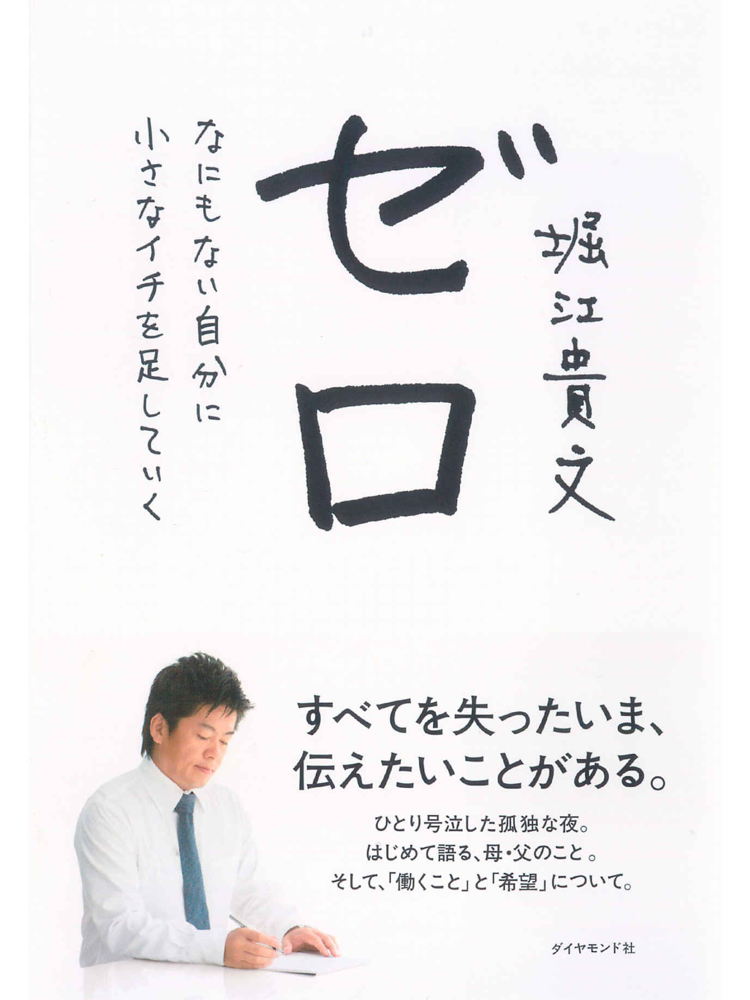
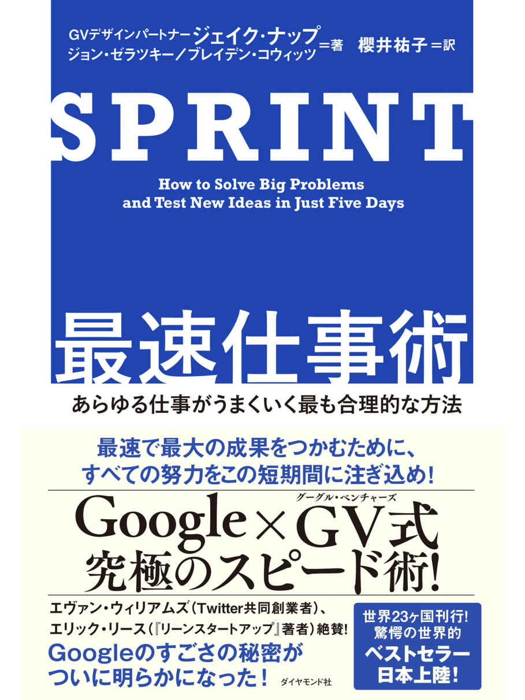
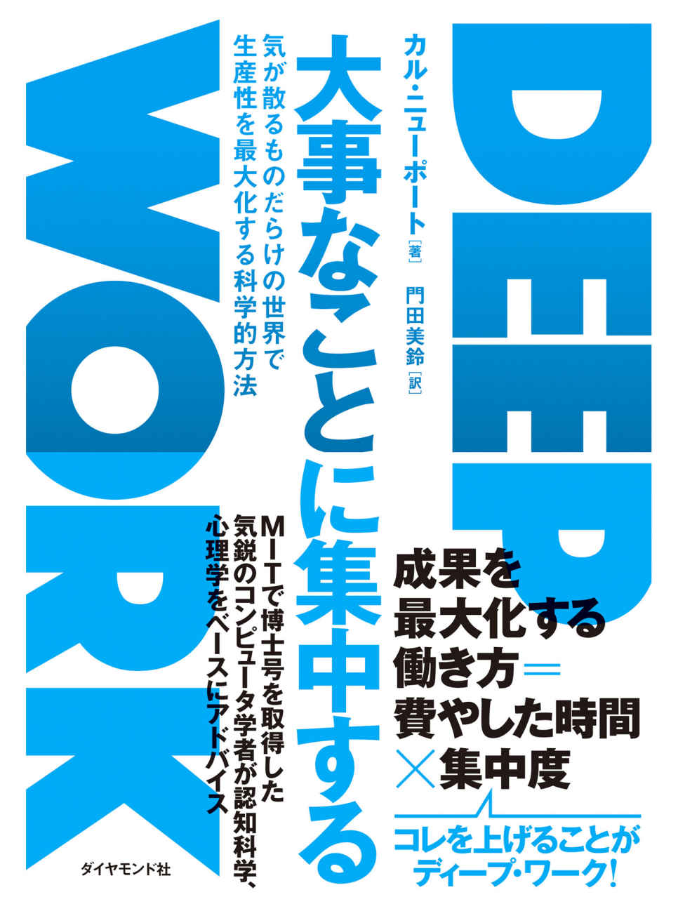
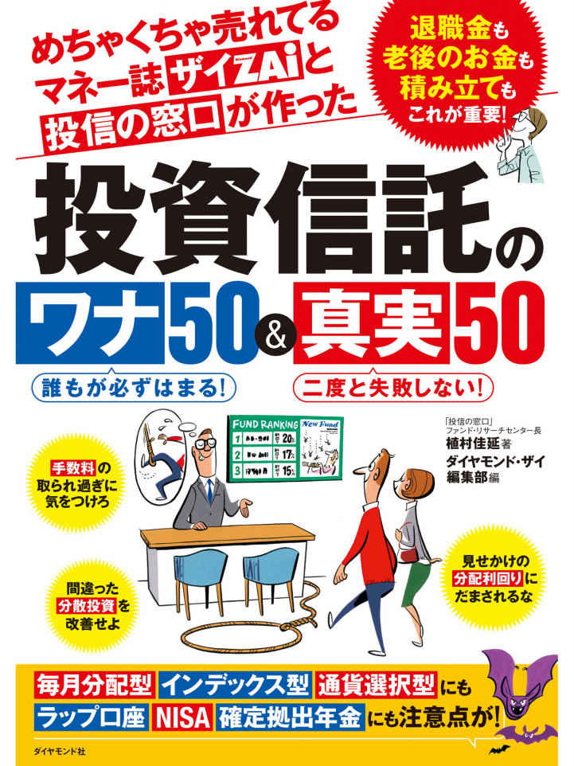

| ダイヤモンド社電子書籍ベスト100 ＜2017上半期＞ | |
| ダイヤモンド社 | |
| ダイヤモンド社 (2017) | |
この本は横書きでレイアウトされています。
また、ご覧になる機種により、表示の差が認められることがあります。
本作品を電子書籍版に収録するにあたり、一部の漢字が簡略体で表記されている場合があります。
BEST100 THE TOP 100 BESTSELLERS OF DIAMOND
はじめに
本書は、ダイヤモンド社が発行する電子書籍のなかから、2017年１月〜６月に最も多く読まれた上位100タイトルを紹介したものです。
ダイヤモンド社は1913年の創立以来、100年以上にわたって主にビジネスパーソン向けの書籍を出し続けてまいりました。それらは、P.F.ドラッカーの『マネジメント』に代表される硬派な経営書から、『もし高校野球の女子マネージャーがドラッカーの「マネジメント」を読んだら』『嫌われる勇気』『伝え方が9割』のようなわかりやすい入門書、さらには『ロスジェネの逆襲』『銀翼のイカロス』といったエンターテインメント作品まで実に多彩なラインアップとなっています。
近年は電子書籍にも積極的に取り組み、上記のようなベストセラー、ロングセラーはもちろん、ほぼすべての新刊を電子化し、いまでは約3500タイトルを刊行するに至りました。
これからご紹介する100冊は、そのなかでも絶対の自信を持ってお薦めできるよりすぐりの電子書籍タイトルです。必ずやあなたのお役に立てる本が見つかることでしょう。
本書をお読みになった皆様が、人生を豊かにする一冊と出会われることを心より願っております。
2017年９月
ダイヤモンド社
※詳細ページへ のアイコンをタップまたはクリックすると、アマゾン（amazon.co.jp）における商品説明ページに遷移します。
※価格は、電子書籍ストアでご確認ください。
※商品画像は、電子書籍ストアにより異なる場合があります。
※一部端末で、リンクが機能しない場合がありますが、あらかじめご了承ください。
BEST 1 THE TOP 100 BESTSELLERS OF DIAMOND
タイトル 嫌われる勇気
著 者 岸見 一郎／古賀 史健
内容紹介
「あの人」の期待を満たすために生きてはいけない------
【対人関係の悩み、人生の悩みを100%消し去る 勇気 の対話篇】
世界的にはフロイト、ユングと並ぶ心理学界の三大巨匠とされながら、日本国内では無名に近い存在のアルフレッド・アドラー。
「トラウマ」の存在を否定したうえで、「人間の悩みは、すべて対人関係の悩みである」と断言し、対人関係を改善していくための具体的な方策を提示していくアドラー心理学は、現代の日本にこそ必要な思想だと思われます。
本書では平易かつドラマチックにアドラーの教えを伝えるため、哲学者と青年の対話篇形式によってその思想を解き明かしていきます。
著者は日本におけるアドラー心理学の第一人者(日本アドラー心理学会顧問)で、アドラーの著作も多数翻訳している岸見一郎氏と、臨場感あふれるインタビュー原稿を得意とするライターの古賀史健氏。
対人関係に悩み、人生に悩むすべての人に贈る、「まったくあたらしい古典」です。
BEST 2 THE TOP 100 BESTSELLERS OF DIAMOND
タイトル まんがでわかる 伝え方が９割
著 者 佐々木 圭一
内容紹介
「恋人ができた」「プレゼンが通った」...喜びの声続々!
人生が一変すると話題の『伝え方が9割』シリーズにまんが版がいよいよ登場!
シリーズ112万部突破のベストセラー「伝え方が9割」のまんが版。
舞台はかつて一世を風靡した女性誌『BB(ビービー)』。
営業部から念願の編集部へと異動した舞だったが、「いつかは編集長になって社会を動かすようなトレンドを生み出す」という夢を抱きながらも、わがままな女優に振り回されたり、モデルの説得に苦労したり、デザイナーに手直しを却下されたりと思い通りにはいかない日々を過ごしていた。
そんな中、ある日立ち寄った書店で『BB』にダメ出しを続ける謎のオネエと遭遇。あまりに的を射たダメ出しの数々にぐうの音も出ない舞。そんな舞の姿を見たオネエ、マリアは、舞に「伝え方ひとつでノーをイエスに変えることができる」とアドバイス。最初は半信半疑のまま、マリアの言う通りに「伝え方」を変えていく舞だったが、実践するうちにどんどん結果が出始めて......。
楽しみながら読み進めていくうちに、「ノーをイエスに変える技術」「強いコトバを作る技術」が自然と身についていく実用面もさることながら、主人公の舞が思い通りにいかない毎日に四苦八苦している姿に共感したり、オネエのマリアから突きつけられる言葉の数々に思わずクスリとしたり、ときにはドキリとしたり......と、読んでいるだけで元気になれる1冊です。
すでに『伝え方が9割』『伝え方が9割 2』を読んでいる人にも、はじめて『伝え方が9割』シリーズを読む人にも楽しめるような内容となっております。
BEST 3 THE TOP 100 BESTSELLERS OF DIAMOND
タイトル やり抜く力
著 者 アンジェラ・ダックワース
内容紹介
★たちまち28万部突破! 世界一話題の空前のベストセラー、ついに日本上陸!
★「最後の1行まで読者を飽きさせない」と朝日新聞書評で異例の絶賛!
★HONZビジネス書グランプリ2017第1位! (ビジネススキル部門)
★DIAMONDハーバード・ビジネス・レビュー読者が選ぶベスト経営書2016第2位!
★2016年翻訳者・編集者・エージェントおすすめの「今年の3冊」第2位!
★ビジネス書大賞2017読者賞!
★2017年上半期ベストセラーランキング第3位(ビジネス部門。トーハン、日販調べ)
★読売新聞、日経新聞、産経新聞、週刊新潮、週刊朝日、NHK「スーパープレゼンテーション」、TBS系「王様のブランチ」他、メディアで続々紹介!
★テレビで話題! 「グリット・スケール」であなたの「やり抜く力」がわかる!
★人生の成功を決定づける「非認知能力」が大幅に伸びる!
ハーバード×オックスフォード×マッキンゼーの心理学者が「人生のあらゆる分野での成功に必要な最重要ファクター」をついに解明!
世界の「能力観」「教育観」を根底から変えた話題の世界的ベストセラー!
ビジネスリーダー、エリート学者、オリンピック選手...成功者の共通点は「才能」でも「IQ」でもなく「グリット」(やり抜く力)だった!
バラク・オバマ、ビル・ゲイツ、マーク・ザッカーバーグ...錚々たる権威がその重要性を語り、米教育省が「最重要課題」として提唱する「グリット」の秘密を初めて解き明かした一冊!
★誰でもどんな分野でも一流になれる最強・最速のメソッド
著者はハーバード大で神経生物学を学び、マッキンゼーのコンサルタント職を経て公立中学の教員となり、オックスフォード大で修士号(神経科学)、ペンシルベニア大学大学院で博士号(心理学)を取り、「グリット」の研究によってノーベル賞に匹敵するマッカーサー賞(天才賞)を受賞した、世界最注目の研究者、アンジェラ・ダックワース教授。
◎「やり抜く力」を測定するテスト
◎「やり抜く力」を伸ばす効果的な方法とは?
◎「やり抜く力」が強くなる環境とは?
◎一流の人が共通して行っている「当たり前のこと」とは?
◎「今日、必死にやる」より「明日、またトライする」
◎この仕組みが「逆境に強い脳」をつくる
◎「ものすごくがんばる」のは「やり抜く力」とは違う
◎子どものころの「ほめられ方」が一生を左右する
◎「2年以上」「頻繁な活動」をした子は将来の収入が高い
◎「やさしい育て方」と「厳しい育て方」はどちらがいいか?
◎「賢明な育て方」診断テスト
人生のすべての成功に最も重要な能力であるグリットを「自ら伸ばす具体的な方法」、そして、「子どもやまわりの人間のグリットを伸ばす効果的な方法」を満載した本書、何をおいてもぜひ読んでほしい珠玉の書だ。
BEST 4 THE TOP 100 BESTSELLERS OF DIAMOND
タイトル 会話もメールも 英語は3語で伝わります
著 者 中山 裕木子
内容紹介
★TVで話題沸騰! 「3語の英語」
★日本テレビ系「世界一受けたい授業」に著者出演! (2月25日)(7月8日)
「短い」英語が知的でスマート!
× My job is an English teacher.
○ I teach English.
「主語・動詞・目的語」の3語でOK!
とっさに言える! すぐ伝わる!
海外旅行、観光案内に効果抜群!
英文メールもスラスラ書けるようになる!
「3語」の組み立てパターンも徹底解説!
新しい文法、単語、構文の暗記はいりません。
これが、英語習得の最短ルートです!
★難解な英語から生まれた「3語の英語」
著者の中山氏は、「特許翻訳者×技術英語講師」であり、特殊で難しい英語と日々格闘していました。
「文法的には正しい、でも伝わらない」。
そんな英語をたくさん見てきました。
英語漬けの日々を送る中、著者は1つの結論に達します。
内容が複雑であればあるほど、それに見合った複雑な英文を組み立てるのではなく、その逆であると。
どんな複雑な文であっても、SVO(誰かが、何かを、する)で表現することこそが、「最も伝わる英語」であると確信したのです。
本書は、そのテクニックをあますところなく、お伝えするものです。
★本書の構成
第1章:「日本人の英語」が伝わらない理由
「be動詞を使いすぎる」「イディオムにこだわる」etc
英語を組み立てるとき、日本人が陥りがちな問題について説明します。
第2章:「3語の英語」は動詞が決め手
動詞の使い方をほんの少し変えるだけで、一気に伝わる英語になります。
第3章:これでOK! 「3語の英語」の組み立てパターン
「4つの主語」と「基本動詞・応用動詞」をもとに、3語の英語の組み立てパターンを徹底解説!
第4章:「3語の英語」に情報を足していく
微妙なニュアンスの調整、あるいは、より多くの情報を伝えるための方法論を紹介します。時制、助動詞、副詞etc
第5章:実践! 「3語で伝える」ために、ここはバッサリ捨てましょう!
「学校英語」を捨て去り、「3語の英語」をマスターするための実践トレーニングを行います。
BEST 5 THE TOP 100 BESTSELLERS OF DIAMOND
タイトル 生産性
著 者 伊賀 泰代
内容紹介
いまの「働き方改革」において、最も重視されるべきは生産性である。
かつて日本企業は生産現場での高い生産性を誇ったが、ホワイトカラーの生産性が圧倒的に低く世界から取り残された原因となっている。
生産性はイノベーションの源泉でもあり、画期的なビジネスモデルを生み出すカギなのだ。
本書では、マッキンゼーの元人材育成マネージャーが、いかに組織と人材の生産性を上げるかを紹介する。
BEST 6 THE TOP 100 BESTSELLERS OF DIAMOND
タイトル 失敗の本質
著 者 戸部 良一／寺本 義也／鎌田 伸一／杉之尾 孝生／村井 友秀／野中 郁次郎
内容紹介
敗戦の原因は何か？ 今次の日本軍の戦略、組織面の研究に新しい光を当て、日本の企業組織に貴重な示唆を与える書。ノモンハン事件、ミッドウェー作戦、ガダルカナル作戦、インパール作戦、レイテ沖海戦、沖縄戦という大東亜戦争における６つの作戦の失敗の原因を掘り下げ、構造的問題と結びつけた日本の組織論の金字塔。
BEST 7 THE TOP 100 BESTSELLERS OF DIAMOND
タイトル 幸せになる勇気
著 者 岸見 一郎／古賀 史健
内容紹介
◆大ベストセラーとして空前のアドラーブームを巻き起こした『嫌われる勇気』の完結編! ◆
前作『嫌われる勇気』でアドラーの教えを知り、新たな生き方を決意した青年。その彼が3年ぶりに哲人のもとを訪れる。
アドラーの教えを実践すべく図書館司書を辞めて教師となった彼が語る衝撃の告白。それは「アドラーを捨てるべきか否か」という苦悩だった。アドラー心理学など、教育現場でも現実社会でも通用しない机上の空論だとする彼に、「あなたはアドラーを誤解している」と哲人は語る。
哲人と青年の対話は、教育論に始まり、仕事論、組織論、社会論、人生論へと及び、最後には「真の自立」と「愛」というテーマが浮かび上がる。そして、最後に哲人が説くのは、誰もが幸せに生きるために為すべき「人生最大の選択」についてだった。 果たしてその選択とは? あなたの人生を一変させる劇薬の哲学問答、再び!
【主な目次】
第一部 悪いあの人、かわいそうなわたし
第二部 なぜ「賞罰」を否定するのか
第三部 競争原理から協力原理へ
第四部 与えよ、さらば与えられん
第五部 愛する人生を選べ
BEST 8 THE TOP 100 BESTSELLERS OF DIAMOND
タイトル 世界のエリートがやっている 最高の休息法
著 者 久賀谷 亮
内容紹介
★【TVで話題沸騰!】シリーズ26万部突破!! 売行きNo.1のマインドフルネス入門書!
★イェール大で学び、精神医療の最前線・米国で18年診療してきた医師が語る!
★「脳疲労」がすぐ消える「科学的に正しい」脳の休め方とは?
◎何もしなくても「脳」はどんどん疲れていく...
脳の消費エネルギーの60〜80%は、デフォルト・モード・ネットワーク(DMN)に使われています。
DMNとは、脳が意識的な活動をしていないアイドリング状態でも動き続ける脳回路です。
この回路が働き続ける限り、ぼーっとしていても、脳はどんどん疲れていくわけです。
◎いくら身体を休めても、「疲れがとれない」のはなぜ?
「何もしていないのに、なぜか疲れが取れない」という人は、このDMNに過剰な活動を許してしまっているのかもしれません。
つまり、DMNの活動を抑える脳構造をつくり、脳にたしかな休息をもたらすことこそが、あなたの集中力やパフォーマンスを高める最短ルートなのです。
◎脳には脳の休め方がある
著者は精神医療の最先端イェール大学で学び、ロサンゼルス郡でクリニックを開業した精神科医の久賀谷亮氏。
先端脳科学に基づいた「TMS磁気治療」などと並んで、科学的な脳の癒し方として注目を集めているのが、瞑想やマインドフルネスです。
世界的に有名な企業や経営者・アントレプレナーたちも、こぞってこの方法を取り入れ始めているのはなぜなのか?
それは、瞑想が単なるリラクゼーションメソッドから、「脳科学的に実証された休息法」へと進化しつつあるからです。
マインドフルネスは脳科学の最前線とどう接触しているのか?
イェール大学を舞台にしたストーリーを楽しみながら、「科学的な脳の休め方」がわかる一冊!!
BEST 9 THE TOP 100 BESTSELLERS OF DIAMOND

タイトル 孫社長のむちゃぶりをすべて解決してきた すごいPDCA
著 者 三木 雄信
内容紹介
【発売1カ月半で、5万部突破のベストセラー!!】
「仕事が終わらない」「仕事が回らない」「成果が出ない」そんな悩みも、「この仕組み」ですべて解決!
■仕事のスピードと結果は、PDCAの回し方で決まる!
著者は長年、孫正義社長のどんなむちゃぶりにも答えてきました。そのために必要だったのが、超スピードで、かつ確実に成果を出す仕事をすることでした。本書は、そのためのノウハウを凝縮したものです!
その仕事術とは、PDCAを確実に、かつ超スピードで回すというものです。ソフトバンクでは、いまも6万人超の社員に求められています。特別な能力を持った人ではなく、どんな人でも使える技術。だから、仕事がうまくいかない、時間がかかってしまう......そうした、すべてのビジネスパーソンが抱える問題もすべて解決! 生産性が求められる今こそ、読んでおきたい1冊です。
■目次
序章 なぜ高速PDCAなら超スピードで仕事が片づくのか?
第1章 高速PDCAを動かす8ステップ
第2章 月間、週間ではなく「毎日」の目標を設定する[高速PDCAの「P」]
第3章 一つひとつではなく、「同時にすべての手段」を試す[高速PDCAの「D」]
第4章 結果は「数字」で厳密に検証する[高速PDCAの「C」]
第5章 「いちばんいい方法」だけを磨き上げる[高速PDCAの「A」]
第6章 「人の力」は借りて、もっと速くなる
BEST 10 THE TOP 100 BESTSELLERS OF DIAMOND
タイトル 世界記憶力グランドマスターが教える 脳にまかせる勉強法
著 者 池田義博
内容紹介
「なら≒（約）デキ」(2017/6/18)記憶力対決で話題!
記憶のインプットとアウトプットがこの1冊に! !
2017年記憶力日本選手権大会優勝!
「ためしてガッテン」「助けて! きわめびと」「マツコの知らない世界」など、テレビ出演多数。
トランプ52枚の組み合わせを3分以内(実際は1分57秒)ですべて覚えることをテレビ出演で実践し、話題沸騰!
もともと記憶に長けていたわけではないのに、なぜ、短時間で大量に覚えられるのか?
年齢を重ねるにつれて覚えが悪くなると思っている人がいたら、それは間違い。
脳はいつからでも鍛えることができるのです!
40代・独学でも4回連続日本一になれた、脳の編集力を最大限に利用した最強の記憶術
■3回読んで1分書くだけで、大量に覚えられる!!
世の中に存在する「試験」と名のつくもののほとんどは記憶の量で結果が左右されるので、「記憶力」を身につければ、たいていの問題は解決できます。
本書は、記憶力日本一、日本人初の世界グランドマスターが教える勉強法で、「覚える」「引き出す」「やる気を出す」「集中力を保つ」など、脳を活用した技術を網羅。
アカデミックな内容ではなく、「結果」を出したテクニック集なので、「脳×勉強法」の類書が多いなか、圧倒的に実践向きの本に仕上がっています。
試験、資格、英語、ビジネスほか......記憶力が左右するものなら、なんでも効果抜群!
ある法則にしたがって3回繰り返して読むだけの「3サイクル反復速習法」や記憶の確認と強化を同時に行う「1分間ライティング」、脳の自動編集機能を使った「1分間マッピング」など、記憶競技で生み出した技術を完全に体系化。
時間のない中、早く結果を出したい、そんな人の要望に応えられる勉強法です。
■「脳にまかせる」とは......
「脳にまかせる」とは、簡単にいうと、勉強の労力を2分の1以下にし、成果を2倍以上にする勉強法です。
脳はまるで腕のよい料理人です。あなたはただ材料を脳に提供するだけ。
あとは脳が勝手にそれらをうまく調理して記憶してくれたり、考えをまとめてくれたりします。
理想は「問題を見て、パッと答えが出せるような状態」です。
それは人の顔を見て、何も考えずに、名前が出てくるような感覚に近いもので、今回紹介する勉強法はその高みまで連れてってくれます!
■目次
序章 40代半ばで挑戦し、なぜ記憶力日本一になれたのか?
第1章 超ラク! 脳の力をだまし絵のように利用して覚える
第2章 脳にまかせて速く覚える「3サイクル反復速習法」
第3章 脳にまかせて言葉にする「1分間ライティング」
第4章 どんな人でも長時間やる気が継続する方法
第5章 本番で結果を出すための超集中法
BEST 11 THE TOP 100 BESTSELLERS OF DIAMOND

タイトル ゼロ
著 者 堀江 貴文
内容紹介
誰もが最初は「ゼロ」からスタートする。
失敗しても、またゼロに戻るだけだ。
決してマイナスにはならない。
だから、一歩を踏み出すことを恐れず、前へ進もう。
堀江貴文はなぜ、逮捕され、すべてを失っても、希望を捨てないのか?
ふたたび「ゼロ」となって、なにかを演じる必要もなくなった堀江氏がはじめて素直に、ありのままの心で語る、「働くこと」の意味と、そこから生まれる「希望」について。
【本書の主な目次】
第0章 それでも僕は働きたい
第1章 働きなさい、と母は言った──仕事との出会い
第2章 仕事を選び、自分を選ぶ──迷い、そして選択
第3章 カネのために働くのか?──「もらう」から「稼ぐ」へ
第4章 自立の先にあるつながり──孤独と向き合う強さ
第5章 僕が働くほんとうの理由──未来には希望しかない
おわりに
BEST 12 THE TOP 100 BESTSELLERS OF DIAMOND
タイトル 伝え方が９割
著 者 佐々木 圭一
内容紹介
【史上初! 3年連続ビジネス書年間ベスト10入り】(2013年〜2015年。トーハン調べ)
【2013年ビジネス書ランキング1位】(紀伊國屋書店新宿本店調べ)
【2013年 6ヶ月連続ビジネス書1位】5月から10月まで、ビジネス書ランキング1位獲得! (日販調べ)
なぜ伝え方で結果が変わるのでしょう?
たとえば、好きな人がいるとします。
でもその人は、あなたのことに少しも興味がないとき、何と言ってデートに誘いますか?
「デートしてください」
こう言ってみました。あなたのピュアな気持ちそのままですね。
これだと断られる確率が高いですよね。
ですが、コトバ次第で結果を変えることかができます。
「驚くほど旨いパスタの店があるのだけど、行かない?」
こう言ってみました。相手は行っていいかも、と思う確率がぐんと上がるコトバです。
どちらにしても、実は「デートしませんか?」という同じ内容なのです。
同じ内容なのに、伝え方で結果が変わってしまう。
これは驚くべきことと思うかもしれません。
ですが、あなたは今までの人生で、「伝え方で変わるのでは?」と、うすうす気づいているのではないでしょうか。
伝え方にはシンプルな技術があります。
この本は、著者が膨大な時間とトライ&エラーで導き出した方法論を整理しました。
料理のレシピのように、誰でもコトバをつくれるよう体系化してあります。
誰でも自分の日常から、試行錯誤の上で伝え方の技術を身につけることもできますが、それだと辿り着くまでに十数年かかってしまいます。効率がよくありません。
この本は、著者のように回り道をしなくても魅力的なコトバを最短でつくれるよう構成してあります。
BEST 13 THE TOP 100 BESTSELLERS OF DIAMOND
タイトル 「原因と結果」の経済学
著 者 中室 牧子／津川 友介
内容紹介
--------------
ビッグデータ時代の必須教養「因果推論」の考えかたがわかる!
--------------
「メタボ健康を毎年受ければ、病気を早期発見・治療ができ、長生きできる」。
そう言われて、違和感を覚える人はほとんどいないでしょう。
しかし、「健診を受けること」と「長生きできること」は、同時に起こっているだけ(相関関係にすぎない)。
健診を受けた「から」、長生きできた(因果関係)のではないかもしれません。
この場合、いままでまったく健康診断を受けなかった人が、毎年受けるようになったとしても、長生きできるとは限りません。
実は、このことについてはすでに多くの研究が行われており、人々に健診を受けさせるようにしても、死亡率は下がらないことが示唆されています。
この本を読めば、2つのことがらが本当に「原因と結果」の関係にあるのかどうかを正しく見抜けるようになり、身の回りにあふれる「もっともらしいが本当は間違っている根拠のない通説」にだまされなくなります。この「因果推論」の考えかたを、数式などを一切使わずに徹底的にやさしく解説します。
BEST 14 THE TOP 100 BESTSELLERS OF DIAMOND

タイトル ＳＰＲＩＮＴ 最速仕事術
著 者 ジェイク・ナップ／ジョン・ゼラツキー／ブレイデン・コウィッツ
内容紹介
■話題沸騰! 著者緊急来日決定! 発売5日で5万部突破! 23か国で刊行の世界的ベストセラー!
■「朝日新聞」書評で絶賛! 戦略、イノベーション、行動科学、デザイン思考......これが秘密の黄金メソッド「SPRINT」!
グーグルで開発された究極のスピード仕事術「SPRINT」。
本書はグーグルとGV(グーグルベンチャーズ)の「成功の秘密」ともいうべきその驚異のノウハウを、世界の誰もが使えるように、開発者自身が徹底して具体的に紹介した、極めて貴重な一冊だ。
著者は、グーグルでGmailからGoogle Xに至るあらゆるプロジェクトのスプリントを指揮してきたナップを筆頭に、YouTubeでリードデザイナーを務めた後、GVに参画したゼラツキー、グーグル・アップス・フォー・ビジネス、グーグル・トレンドなどのプロダクトのデザインを指揮してきたコウィッツという超豪華な面々だ。
■これで世界中のすべての人間がすごいアイデアを実現できる!
グーグル発の「SPRINT」はすでに世界を動かし始めている。
フェイスブック、マッキンゼー、エアビーアンドビー、ブルーボトルコーヒー......シリコンバレーの最先端の企業から、国際機関、非営利組織、学校などでも採用され、絶大な効果を上げているのだ。
「SPRINTは高速化し続ける世界に苦しむあらゆる企業への処方箋だ」
(GE副会長べス・コムストック)
「新しいものを生むアプローチを洗練させ続けてきたこの手法にぜひトライしてほしい」
(IDEO社長兼CEOティム・ブラウン)
「より良いものをより速く生み出したければ、本書の言うことをそのままやればいい」
(Twitter共同創業者エヴァン・ウィリアムズ)
「膨大な『時間』と『資金』をセーブし、たった5日でアイデア出しから試作、決定までのすべてができるようになる」
(『リーンスタートアップ』著者エリック・リース)
「アイデアを生み、問題を解決し、解決策を試すパワフルな方法を説き、そのすべてを生かせる『正しい習慣』を教えてくれる」
(『習慣の力』著者チャールズ・デュヒッグ)
仕事を「最速化」し、大きな成果を出し続けるにはどうすればいいのか?
世界23ヶ国で刊行の世界的ベストセラー、待望の邦訳である。
BEST 15 THE TOP 100 BESTSELLERS OF DIAMOND
タイトル 自分の時間を取り戻そう
著 者 ちきりん
内容紹介
仕事よりも、自分優先で生きる方法を教えます!
残業ばかりで限界の管理職、正樹。
家庭と仕事の両立に悩む母親、ケイコ。
働きづめのフリーランス、陽子。
会社が伸び悩んできた起業家、勇二。
多忙で余裕のない4人の物語からわかる「忙しさの本質」と「日本で働く人たちの問題点」とは?
そして今、世界中で進みつつある「大きな変化」とは?
2つの視点から明らかになる、1つの重要な概念と方法論。
超人気"社会派ブロガー"が「現代を生きぬくための根幹の能力」を解説する、大好評シリーズ第3弾!
---
「自分の時間を取りもどそう」
------この本のタイトルは、仕事や家事、育児に多忙な日々を過ごしているすべてのみなさんへのメッセージです。
新入社員だから、第一希望の会社に入れたのだから、やっとつかんだチャンスだから、高く評価されているから、今が頑張りどころだから、途中で投げ出すべきじゃないから、そして、家族のためだから、他の人はもっと頑張っているから......
多くの人がさまざまな理由で、忙しすぎる生活を「避けられないもの」「自分が頑張って乗り切るべきもの」として受け入れてしまっています。
でも、本当にそうなのでしょうか?
この多忙な生活を脱する方法は、どこにも存在しないのでしょうか?
私はあまりに多くの人がそんな生活を当たり前のように受け入れ、本当にやりたいことを後回しにし、時には体や心を壊すまで頑張ってしまう現状を、とても普通のこととしては受け入れられません。
受け入れるべきだと思えないのです。
2016年、厚生労働省は初めて「過労死等防止対策白書」を作成しました。
現状を把握し対策を考えるのはいいことですが、問題はそれほど深刻化しているのです。
同白書によると、仕事を理由のひとつとする自殺は年間2000人以上、業務による心理的負荷を原因とする精神障害は、労災請求件数だけでも1500件と15 年前の7倍です。
当然、労災など請求できず、仕事を原因とするうつ病で苦しむ人の数は、これより桁違いに多いはずです。
最近は政府も「働き方改革」と称して長時間労働を是正しようと動き出していますが、「働く時間を短くしましょう」「はい。そうしましょう」と言って問題が解決できるほどコトは簡単ではありません。
今回の本では、ふたつの異なる視点からこの問題にアプローチしました。
個々人が直面する超多忙な生活からの脱出方法について考える視点と、今の社会で急速に進みつつある変化の本質に焦点を当てた視点です。
このふたつの視点をもって見ると、そこには共通する、ひとつの「答え」が浮かび上がってきます。
詳しくは本書をお読みいただくとして、まずは序章に登場する4人の生活振りをご覧ください。
4人の物語から浮かび上がるものと、今の社会で進みつつある大きな変化。
それらを俯瞰したとき、私たちが理解すべきこと、身につけるべきスキルとはなになのか。
本書を読まれたみなさんが自分の時間を自分の手に取り戻し、やりたいことを少しでも多く実現できる「自分の人生」を謳歌できますよう、この本によってそのお手伝いができることを、著者として心から願っています。
(「はじめに」より抜粋)
BEST 16 THE TOP 100 BESTSELLERS OF DIAMOND
タイトル マッキンゼーが予測する未来
著 者 リチャード・ドッブス／ジェームズ・マニーカ／ジョナサン・ウーツェル
内容紹介
世界一のコンサルティング・ファームが予測する近未来は、こんなにも激しく、破壊的だ
英『ザ・エコノミスト』『フォーチュン』『フォーブス』が選ぶ必読書
エリック・シュミット「これから何が起こるのか、先見の明ある診断を提供してくれるばかりか、日々変化の速度を増していく世界でどのようにすれば成功できるのかがわかる」
戦略コンサルティング・ファーム, マッキンゼー・アンド・カンパニーの経営および世界経済の研究部門である、MGI(マッキンゼー・グローバル・インスティテュート)のディレクターであるコンサルタント3名による未来予測本。
「もし、これまでの人生であなたが積み上げてきた直観のほとんどが間違っていたとしたら?」
著者たちは、こう問いかける。私たちがこれまで学び、社会の常識だと考えてきたことが、世界の実情とはかけ離れはじめている。つまり、現実の変化の方が、私たちの認識している常識を追い越してしまっている。本書は、そうした私たちの認識と現実のギャップを、数多くの事例で示してくれる。
著者たちは、世界・地域経済の見方を変える必要性を力説し、これまでしみついた直感・常識を捨てることを提唱。そのことを検証するため、現在進行中の変化の根源を、時系列データを用い、グラフィカルに分かりやすく説明し、こうした思考の変革が、企業ならびに政界のリーダーになぜ必要なのかを主張している。知的刺激が満載の本。
BEST 17 THE TOP 100 BESTSELLERS OF DIAMOND
タイトル 幸福の「資本」論
著 者 橘 玲
内容紹介
作家であり、社会評論家でもある橘玲氏の集大成ともいえる内容で、初めて「ひとの幸せ」について真正面から取り組んでいます。
幸福であることを条件づけるものは、「自由」「自己表現」「共同体=絆」の3つである。
橘氏は、「幸福」は、しっかりした土台の上に設計するべしとし、その人生の「インフラストラクチャー」を前述の3つに対応させて、以下に求めます。
「金融資産(資本)」「人的資本」「社会資本」。
この3つの資本の組み合わせによって生まれる「人生の8パターン」によって、すべてのひとびとの「幸福」のカタチが説明できるとしています。社会資本(中学からの友達ネットワーク)しかない田舎のマイドルヤンキーは、「プア充」。「友だちネットワーク」から排除されるとたちまち3つとも持っていない「貧困」に陥る。金融資産がなくても、高収入を得られる職業につき、友だちや恋人がいれば、人的資本と社会資本を持っている「リア充」。人的資本と金融資産があって社会資本がないのは、「金持ち」の典型、という具合。3つの資本をすべてそろえることは難しいが、せめて2つをそろえれば「幸福」といえる状態になるのではないか。では、どうすれば2つをそろえることができるのか...、そして「幸福」になれるのか、3つの資本を解説しながらその答えを追いかけます。
プロローグ あなたが存在することがひとつの奇跡
PART0 「金持ち」と「貧乏」の三位一体幸福論
1 幸福の3つのインフラ
2 「最貧困」から人生を考える
3 人生の8つのパターン
PART1 自由のための金融資産
4 お金と幸福の関係
5 マイナス金利の世界
PART2 自己実現のための人的資本
6 人的資本は「富の源泉」
7 クリエイティブクラスとマックジョブ
8 サラリーマンという生き方
9 オンリーワンでナンバーワンの戦略
10 高齢化社会の唯一の戦略
PART3 幸福のための社会資本
11 友だちとはなんだろう?
12 個人と間人
13 うつは日本の風土病
14 フリーエージェント戦略
15 「ほんとうの自分」はどこにいる?
エピローグ それでも幸福になるのはむずかしい
あとがき
BEST 18 THE TOP 100 BESTSELLERS OF DIAMOND
タイトル ロスジェネの逆襲
著 者 池井戸 潤
内容紹介
人事が怖くてサラリーマンが務まるか！
ドラマも大ヒットとなった「半沢直樹」シリーズ。その第3弾となる『ロスジェネの逆襲』は、バブル世代の主人公が飛ばされた証券子会社が舞台。
ときは2004年。銀行の系列子会社東京セントラル証券の業績は鳴かず飛ばず。そこにIT企業の雄、電脳雑伎集団社長から、ライバルの東京スパイラルを買収したいと相談を受ける。アドバイザーの座に就けば、巨額の手数料が転がり込んでくるビッグチャンスだ。ところが、そこに親会社である東京中央銀行から理不尽な横槍が入る。責任を問われて窮地に陥った主人公の半沢直樹は、ロスジェネ世代の部下・森山雅弘とともに、周囲をアッといわせる秘策に出た------。
直木賞作家による、企業を舞台にしたエンタテインメント小説の傑作！
BEST 19 THE TOP 100 BESTSELLERS OF DIAMOND
タイトル 周囲がざわつく自分になる 必要なのはコスメではなくテクニック
著 者 長井 かおり
内容紹介
●毎朝のメイクは、極上の自分になれるトレーニング●
☆流行も関係ない!
☆年齢も怖くない!
☆コスメに頼らなくていい!
自分の「テクニック」さえあれば、美しくなれる! !
だまされたと思って、この本の「手つき」どおりに化粧水を塗ってください。
目尻の小じわくらいなら、2週間で消えます
ビューラーの上げ方を知ると、まつ毛が見たこともないくらいあがるでしょう。
この本では、私がプロの現場で得たことを、一般の方にも体得してもらえるように、あますところなく紹介しました。
ムダなものはひとつもありません。
---------はじめに より
【本文より抜粋】
これから一生「すべての人から好感度の高い」顔になる
・眉マスカラは、眉をひそめて塗る
・正しい肘の角度で、まつ毛はまだまだ上がる
・チャームポイントは、メイクをしながら分かる
・ファンデーションは頬だけに塗る
・マスカラは折って使う
・眉は下ラインがいちばん大切
・リップのあとは唇のまわりをぐるっとなでる
・ポニーテールは、こめかみともみあげがすべてを決める
BEST 20 THE TOP 100 BESTSELLERS OF DIAMOND
タイトル 採用基準
著 者 伊賀 泰代
内容紹介
●概要
マッキンゼーの採用マネジャーを12年務めた著者が語る
マッキンゼーと言えば、ずば抜けて優秀な学生の就職先として思い浮かぶだろう。
そこでは学歴のみならず、地頭のよさが問われると思われがちで、応募する学生は論理的思考やフェルミ推定など学んで試験に挑もうとする。
しかしマッキンゼーの人事採用マネジャーを10年以上務めた著者は、このような見方に対して勘違いだという。
実はマッキンゼーが求める人材は、いまの日本が必要としている人材とまったく同じなのだ。
だからこそ、マッキンゼーは「最強」と言われる人材の宝庫の源泉であり、多くのOBが社会で活躍しているのだ。
本書では、延べ数千人の学生と面接してきた著者が、本当に優秀な人材の条件を説くとともに、日本社会にいまこそ必要な人材像を明らかにする。
●主な内容 ・マッキンゼーでの17年間
・コンサルティングより人材育成システム
・誤解される採用基準
・採用したいのは将来のリーダー
・東大法学部と経済学部の学生の違い
・スクリーニング基準と採用基準の違い
・日本の大企業で劣化する人
・能力の高い人より、これから伸びる人
・「マッキンゼー入社」を目標にしている人は採用されない
・不幸な海外MBAへの企業派遣制度
・すべての人に求められるリーダーシップ
・リーダーシップで人生をコントロールする
・メンタルセットの変化
・問題が解決できる
・自分の世界観が実現できる
・世界が拡がる
・価値観転換機関としてのマッキンゼー
BEST 21 THE TOP 100 BESTSELLERS OF DIAMOND
タイトル ありえないレベルで人を大切にしたら２３年連続黒字になった仕組み
著 者 近藤宣之
内容紹介
◆発売たちまち第8刷!
2017年上半期『TOPPOINT大賞』ベスト10冊入り決定!
日経新聞4/17&5/29掲載で大反響!
◆「ビジネス・ブック・マラソン」&「トップポイント」&「日経ビジネス」書評掲載!
◆天狼院書店店主・三浦崇典氏絶賛!
「社員のモチベーションを上げるためにすべきことの全てが披露され、勇気を与えてくれる好著」
さらに読者からの声続々!
「会社経営やマネジメントにおける最高の教科書」
「今年買った本の中で、間違いなくNo.1の著書でした」
「評価制度や特別付録が非常に有り難かった。経営や人事にそのまま使える」
「良い報告は笑顔で聞く、悪い報告はもっと笑顔で聞く、社長の本気が社員を本気にする、というのがよかった」
◆どんな組織でも使える! 社員のモチベーションアップの秘密が満載! ◆
◎倒産寸前「7度の崖っぷち」から年商4倍、23年連続黒字、10年以上離職率ほぼゼロ!
◎「赤字は犯罪」&「黒字化は社員のモチベーションが10割」と断言!
◎学歴、国籍、性別、年齢不問! ダイバーシティで女性管理職3割!
◎「2－6－2」の「下位20%」は宝! 70歳まで生涯雇用!
......かつてこんな会社があっただろうか?
現役社長の傍ら、日本経営合理化協会、松下幸之助経営塾、ダイヤモンド経営塾から慶應義塾大学大学院ビジネス・スクールまで年50回講演。
その笑顔と「人を大切しながら利益を上げる」深い哲学が話題を呼び、全国から講演依頼が絶えない。
7500社超を視察した『日本でいちばん大切にしたい会社』著者・坂本光司氏も太鼓判を押すありえない経営者、初の経営書!
第1回「日本でいちばん大切にしたい会社」大賞の「中小企業庁長官賞」、第3回「ホワイト企業大賞」など受賞多数。
なんと、政府がこれから目指す施策を20年以上前から実践している小さな会社があった!
◆2人の息子の死、ガンなど「7度の崖っぷち」からの復活
◆ファンドを入れない日本初の「MEBO」で親会社から独立し全員が株主
◆学歴、国籍、性別、年齢不問のダイバーシティ経営
◆理想主義・実力主義・家族主義が共存
◆人を大切にしながら利益を上げる会社
◆社員が言いたいことが言える風土
◆「赤字は犯罪」と断言
◆亡くなった外国人女性社員の子の面倒を見続ける
◆腎臓が両方ない59歳社員もイキイキ働ける
◆ガン闘病中社員に入院中も給料を払い続ける
◆為替変動など専門商社特有のシビアな外的環境も言い訳せず
◆ほぼハローワーク経由採用
◆社員と年5000通の「今週の気づき」メールと向き合う
特別付録「人を大切にしながら利益を上げる問答集」も初公開!
「7度の崖っぷち」に遭いながらも、ひたすら前進し、運をたぐり寄せた秘密!
【もくじ】
◆プロローグ:どんな会社も必ず再建できる!
●人を大切にしながら利益を上げる会社
●私が直面した「7度」の崖っぷち
●亡くなった社員の子まで面倒を見る会社
●「強くてやさしい会社」が社員のモチベーションを引き出す
◆第1章:23年連続黒字は社員のモチベーションが10割!
◆第2章:10年以上離職率ほぼゼロ! 人が辞めない仕組みはこうつくる
◆第3章:なぜ、女性を大切にすると利益が上がるのか?
◆第4章:どん底から運をたぐり寄せるコツ
◆エピローグ
◆特別付録:「人を大切にしながら利益を上げる」問答集
BEST 22 THE TOP 100 BESTSELLERS OF DIAMOND
タイトル ゼロ秒思考
著 者 赤羽 雄二
内容紹介
マッキンゼーで14年間活躍した著者の独自メソッド------
それは、「メモ書き」によって思考と感情の言語化をトレーニングすることで、どんな人でも確実に頭がよくなり、心も鍛えられるというもの。
著者が二十数年にわたって改良を続け、クライアント先で実践してもらうことで、すでに1000人を超える人が効果を実感している。
誰でも、どこでもできて、お金もほとんどかからないシンプルな方法ながら、実践した多くの人が、
「打てば響くような会話ができるようになった」
「オリジナルな企画書をすぐに書けるようになった」
「自分に自信がついた」
「嫉妬やパワハラに負けない精神力が身についた」
「自分の気持ちを素直に伝えらえるようになった」
という。
本書はそのトレーニングの方法を詳細に解説し、著者の考える思考の質とスピードの到達点、「ゼロ秒思考」への道を紹介するものである。
【本文より】
A4の紙に1件1ページで書く。
ゆっくり時間をかけるのではなく、1ページを1分以内にさっと書く。
毎日10ページ書き、フォルダに投げ込んで瞬時に整理する。
それだけで、マッキンゼーのプログラムでも十分に教えていない、最も基本的な「考える力」を鍛えられる。
深く考えることができるだけでなく、「ゼロ秒思考」と言える究極のレベルに近づける。
【著者への質問が可能】
本書の特長として、著者が「おわりに」でメールアドレスを公開し、読者のメモ書きへのフィードバックを約束している。また、フェイスブックで特設ページを開設しており、そこで直接著者に質問できる。フェイスブックの検索で「ゼロ秒思考」と入れてみていただきたい。
BEST 23 THE TOP 100 BESTSELLERS OF DIAMOND

タイトル ＳＬＥＥＰ 最高の脳と身体をつくる睡眠の技術
著 者 ショーン・スティーブンソン
内容紹介
【全米No.1人気! 】
【TED、FOX NEWSで話題沸騰! 】
650万人の生活を変えた最強の睡眠法が初上陸
------あなたは眠るたびに賢くなる。
米国最前線の睡眠法のすべて!
睡眠の質を向上させるカギは脳内物質にあり
食事、ベッド、寝る姿勢、パジャマ------睡眠の全技術を一冊に集約。
どんな疲れも超回復し、脳のパフォーマンスを最大化する世界最先端の21の〈科学的睡眠メソッド〉を日本初公開!
(最高の脳と身体をつくる睡眠の技術)
▶脂肪を燃焼しやすい身体になる
▶老化を防ぐ寝室をつくる
▶睡眠に最適な室温は15~20℃
▶「午後10時の元気」に頼ると不眠になる
▶仰向けが最良の寝る姿勢
▶脳波の4つのモードを使いこなす
▶抑えるべきは脂肪ではなく糖質
▶夜の運動は快眠のためにならない
▶朝起きたらすぐ水を飲む
すべての疲労を超回復し、脳のパフォーマンスを最大化する最強の睡眠法。
BEST 24 THE TOP 100 BESTSELLERS OF DIAMOND
タイトル ブロックチェーン・レボリューション
著 者 ドン・タプスコット／アレックス・タプスコット
内容紹介
世界経済に将来、最も大きなインパクトを与える技術が誕生した。
人工知能でも、自動運転車でもない。
IoTでも、太陽エネルギーでもない。
それは、「ブロックチェーン」と呼ばれている------
クレイトン・クリステンセン(『イノベーションのジレンマ』著者)
スティーブ・ウォズニアック(Apple共同創業者)
マーク・アンドリーセン(Netscape開発者、Facebook取締役)
伊藤穰一(MITメディアラボ所長)
ら多数の著名人が激賞する、「ブロックチェーン」解説書の普及版にして決定版。
インターネットに比肩する発明によって引き起こされる革命の全貌が、多数のキーマンや企業への取材によって明かされる必読の1冊。
【推薦の言葉】
迫り来る破壊的イノベーションの波をいかに生き延びるのか。
本書はそのためのサバイバル指南書だ。時代を象徴する1冊になるだろう。
クレイトン・クリステンセン(『イノベーションのジレンマ』著者)
ブロックチェーンはコンピューター科学の歴史を変えるほどの大発明である。
本書を読めばその威力が理解できる。
マーク・アンドリーセン(Netscape開発者、Facebook取締役)
これはすごい本だ。どこまでも広く深い考察に圧倒される。
技術・経済・社会のすさまじい転換期に僕らは今生きているのだ。
スティーブ・ウォズニアック(Apple共同創業者)
インターネットが情報革命を起こしたように、ブロックチェーンは信頼に革命を起こすだろう。
これはあらゆることを変える可能性を秘めた技術だ。本書を読めばわかる。
伊藤穰一(MITメディアラボ所長)
BEST 25 THE TOP 100 BESTSELLERS OF DIAMOND
タイトル 社内プレゼンの資料作成術
著 者 前田 鎌利
内容紹介
■孫正義社長が「一発OK」を連発した社内プレゼン術を全公開！
■資料５〜９枚、３分のプレゼンで、１００％の説得力を生む技術！
■約８０の図版で「超」実践的なテクニックを解説！
■ソフトバンク、ヤフーで採用された「究極のプレゼンスキル」！
上司や経営者を説得するプレゼン力------。これは、すべてのビジネスパーソンに求められる力です。しかし、ほとんどの人々が苦手。何度も却下されたり、保留されることに悩んでいるのではないでしょうか？
そこで、ソフトバンクで孫正義氏から何度も「一発OK」を勝ち取った、著者・前田鎌利さんの社内プレゼン術をすべて公開していただきました。超多忙かつ切れ者の上司を、たった３分のプレゼンで納得させなければならない。そのために、最も重要なのはシンプル＆ロジカルな資料を準備すること。そのための実践的なノウハウがつまった一冊です。
●「５〜９枚」で説得力を生む方法
●１０秒でわかるスライドのコツ
●社内プレゼンに必要なたった一つのストーリー
●キーメッセージは「１３字」以内
●「１スライド＝１グラフ」の鉄則
●グラフは「左」、メッセージは「右」
●「数字」を強調してパワースライドにする
●「逆L字」で目線を誘導する
●ワンカラー効果で「円グラフ」を見せる
●「折れ線グラフ」は角度をつける
など、孫正義氏のプレゼン資料を多数手がけたほか、ソフトバンクの社内プレゼン講師を長年務める著者のノウハウを、約８０点の図版（実際のスライド中心）とともに丁寧に解説しています。
孫正義氏に鍛えられた「社内プレゼンの資料作成術」は、ビジネスパーソンのキャリアを切りひらくのはもちろん、会社の意思決定スピードを速めることにも効果絶大。誰も教えてくれなかった「社内プレゼンの基本＆テクニック」が満載の一冊です。
BEST 26 THE TOP 100 BESTSELLERS OF DIAMOND
タイトル 銀翼のイカロス
著 者 池井戸 潤
内容紹介
半沢直樹シリーズ第4弾、今度の相手は巨大権力!
新たな敵にも倍返し! !
頭取命令で経営再建中の帝国航空を任された半沢は、500 億円もの債権放棄を求める再生タスクフォースと激突する。
政治家との対立、立ちはだかる宿敵、行内の派閥争い------プライドを賭け戦う半沢に勝ち目はあるのか?
BEST 27 THE TOP 100 BESTSELLERS OF DIAMOND

タイトル シリコンバレー式 自分を変える最強の食事
著 者 デイヴ・アスプリー
内容紹介
★話題騒然! 17万部突破!
「バターコーヒー」を始める人が続出!
ハリウッドセレブ御用達! NYからシアトルまで、全米の食生活を劇的に変えた大ベストセラー!
『世界の果てまでイッテQ! 』アイガー特集で、「バターコーヒーで1か月で5、6キロ痩せた」、「山男のパワーの源」と大激賞!
バレエダンサー宮尾俊太郎氏やモデルの道端カレン氏など、一流のダンサー、アスリートからトップモデルまで絶賛続々!
シリコンバレーで成功したITの寵児が、15年間、30万ドルを投じて世界中の食とダイエットを研究しつくし、脳科学から栄養学、生化学まであらゆる研究を総合、自らの体まで「ハック」し尽くして答えを出した「食と体の真実」とは?
低炭水化物、低カロリー、菜食主義......あらゆる食事法の「痩せる効果」「健康効果」「頭をよくする効果」をすべて検証、自らもIQを20ポイント上げ、50キロ痩せた「完全無欠」の食事メソッド!
【内容より】
・朝、「ヨーグルト」を食べると太る
・IQは「食べ物」で変わる
・空腹になる食べ方、ならない食べ方
・「腹が空っぽ」のときがいちばん筋肉がつく
・炭水化物は「夜」に食べたほうがいい
・脂肪を食べると痩せる
・「カロリー制限」では痩せられない
・低炭水化物ダイエットは「カビ」を減らすから効く
・「空腹ホルモン」をハックする
・あなたの体を「解毒マシン」にする
・脳は「脂肪」でできている
・炭水化物をカットすると、うまく眠れなくなる
・「冷や飯」が腸内の善玉菌を育てる
・果物が「集中力とエネルギー」を奪う
・パンを「一切れ」食べると、時間差で悪影響が出る
・同じものでも「食べる時間」で毒になる
・パフォーマンスを最大化する「ベストの朝食」とは?
・カフェインが脳を守る
・「腸内細菌」を飢えさせると、脂肪が燃える
・体内の「痩せ型」細菌にえさをやる
・栄養は調理しだいで変幻自在
......など
BEST 28 THE TOP 100 BESTSELLERS OF DIAMOND

タイトル モテるメール術
著 者 白鳥 マキ
内容紹介
1万2000人が変わった、今日から使えて明日には結果が出る(モテる)メールテクニックのすべて。
「×」「○」ですぐわかる! LINE、Facebookなどで使える鉄板テンプレが満載!
★お見合い歴10年でなんと60連敗中のアラフォー男性が、メールでの返信方法を変えただけで、わずか1か月で年下美女とゴールイン!
★職場の女性から恋愛対象外と言われ続けてきた20代男性が、同僚の女性がミスしたときに、メールをうまく使って気遣っていたら、恋愛対象に昇格し、晴れて交際へ!
★仕事のしすぎで彼女イナイ歴8年の34歳の男性が、メールでのフォローをうまくしたとたんに、複数の美人からつき合ってほしいと告白される!
メールの優位性が高まった今だからこそ、書き方を変えるだけで、誰でもモテるようになるノウハウがぎっしり詰まった1冊!
男女ではメールの受け止め方の違いが大きいというメールの基本から応用に至るまで、上記の例のように、少し書き方を変えるだけで、幸せをつかむことができるのです!
「恋愛下手」と「恋愛上手」の境目は、文章がうまく伝わらないことから起こります。
男性「今度デートしようよ」
女性「ちょっとその日は難しいかも」
男性「無理しないでいいよ、また今度ね」
これでは、まずモテません。ここにもモテるための書き方があります!
同じ好意のある言葉を伝えているつもりでも、伝え方ひとつで、相手の反応がまったく違います。
それを知らなくて損をしている人もまた多いのです。
モテるために知らなかったことがまだまだこんなにたくさんある!
●最初に誘うときは常に2択で!
●ごちそうした後は、男性からメールをしてはダメ
●「おはよう」に続く言葉の9割がNG
●「好き」と言えないなら、謝罪フレーズでOK
●「無理しないでいいよ、また今度ね」は、モテない
●メールを送るときに使ってはいけない「DD言葉」
●自信がない人が傷つかずに告白する方法
●「そうだね」メールが女性は嬉しい
●1年音信不通だった人にメールをしたら3分後に返信がきた。その文章とは?
●遅刻確定! そのとき発する言葉でモテる方法
●本当は怖い「おやすみ」メール
●電話の前にメールするだけで超いい人に見える
●話し言葉をそのままメールにしてはいけない
●既読スルーは2つ前のやりとりが原因!?
●「やっぱり」「一応」をメールで使ってはいけない
●「優しいね」「かわいいね」が超絶ダメな理由
●主語を「YOU」から「I」に変えるだけで、怖いぐらいモテる
●「もし」を使うと、お願いが通りやすくなる
●お願いした数だけ勝手にモテる
●デートプランの最後を相手に決めてもらえばドタキャンはまずない......
●3回断られることに大事なモテ要素が隠れている
●男性は比較されるのが嫌いだが、女性は比較して褒めたほうが効果的
●10年間、お見合い60連敗中の男性が結婚を引き寄せた「そっくりコピペメール法」
●本気で怒られているときも、「そっくりコピペ法」でケンカ回避
●絶対メールが来る「助けてメール」
●相手が今どこにいるのか聞き出すには?
●2回目のデートまではひたすら聞き役を
●本命に近づくために気を付けないといけない言い回しがある
●女性が喜ぶと思っている文章は実は嫌がられている!?
●「メリット」と「質問」が最強な組み合わせ
●怒られた理由がわからないときは「ごめんねサンドイッチ」
......続きは、本書で!
■目次
第1章
なぜ「モテるメール術」を使うと、
確実に異性から好かれるのか?
第2章
気になる相手を
絶対に振り向かせるモテる10の法則
第3章
「また会いたい」と
言われるほどの最強の伝え方
第4章
2人の関係が劇的に変わる
究極の書き方
BEST 29 THE TOP 100 BESTSELLERS OF DIAMOND
タイトル 経済は地理から学べ！
著 者 宮路 秀作
内容紹介
「土地と資源」の奪い合いから、経済が見える!
仕事に効く「教養としての地理」「立地、資源、貿易、人口、文化」を知れば、世界はこんなに面白い!
◎トランプ大統領のTPP離脱を読むカギは"国境"
◎日本経済を秘かに支える"水の力"とは?
◎EU経済の急所は"2つの河"にあり
地理とは、地形や気候といった自然環境を学ぶだけの学問ではありません。
農業や工業、貿易、流通、人口、宗教、言語にいたるまで、現代世界の「ありとあらゆる分野」を学ぶ学問なのです。
地理という"レンズ"を通せば、ダイナミックな経済の動きを、手に取るように理解できます。
本書は「立地・資源・貿易・人口・文化」という切り口から、"今"と"未来"をつかむ視点を提供するものです。
★人に話したくなる「知識人としての教養」
「地理」は英語で「Geography」です。これはラテン語の「Geo(地域)」と「Graphia(描く)」からなる合成語といわれています。
現代においては、写真を1枚撮るだけで、自然はもちろんのこと、そこで暮らす人々の衣食住、土地利用など、実にさまざまな情報が写し出されます。
しかし、カメラが存在していなかった時代は、これらの情報をすべて描き出していたのです。
「Geo(地域)」を「Graphia(描く)」。
これが地理の本質なのです。
地理とは、表面的な事実の羅列ではありません。
「地域」に展開するさまざまな情報を集め、分析し、その独自性を解明するものです。
だからこそ、そこには「理(ことわり)」があります。
地理とは「地球上の理」なのです。
★「土地と資源」の奪い合いから、経済が見える!
著者は、「代ゼミの地理の顔」といわれ、"東大地理"を教える宮路秀作氏。
「地理」を通して、現代世界の「なぜ?」「どうして?」を解き明かす講義は、9割以上の生徒から「地理を学んでよかった! 」と大好評。
講義の指針は、「地理とは、地球上の理(ことわり)である」。
生徒アンケートは、講師1年目の2008年度から全国1位を獲得し続けている。
◆◆◆本書の主な内容◆◆◆
・トランプ大統領のTPP離脱を読むカギは"国境"
→キーワードは「多国籍企業」「NAFTA」「アメリカの雇用」
・日本経済を秘かに支える"水の力"とは?
→21世紀は「水の世紀」。水資源の重要性と日本の現状
・ロシアの最大輸出国はオランダ。なぜ?
→「ロシアーヨーロッパ」における経済大動脈を読む
・"土地も資源もない日本"が、なぜ経済大国になれたのか?
→地理的視点から浮かび上がる「2つの強み」
・なぜ、中国は2015年に一人っ子政策をやめたのか?
→人口と経済発展のジレンマ。これから中国はどうなる?
・インドの牛肉輸出量が、世界一になった理由とは?
→インド経済を変えた「白い革命」に迫る
・経済発展のカギは低賃金!? 先進国スペインの"地の利"とは?
→EUの自動車産業がわかれば、経済の本質がわかる
・EUに加盟しない実力国、ノルウェーの正体とは?
→他国の追随を許さない「3つの強み」とは?
・イギリス料理が「マズい」といわれる本当の理由
→キーワードは「ジェントルマン」と「土壌」
BEST 30 THE TOP 100 BESTSELLERS OF DIAMOND
タイトル 入社１年目の教科書
著 者 岩瀬 大輔
内容紹介
新入社員が仕事を進める上で大切な「仕事の3つの原則」と具体的な50の行動指針を1冊に凝縮!
仕事の原則1「頼まれたことは、必ずやりきる」
仕事の原則2「50点で構わないから早く出せ」
仕事の原則3「つまらない仕事はない」
ビジネスパーソンとしての第一歩を踏み出すための心構えは、ベテラン社員でも実践できていないものが多く、新社会人をはじめ、後輩・部下を指導する人、転職・異動1年目の人、仕事の取り組み方を見直したい人まで、幅広い層に支持されている。
また、上司が部下に、親御さんがお子さんに、先輩が後輩に贈る本としてもおすすめだ。
ほかにも、短大・大学のキャリアデザイン学科で教科書採用されたり、内定を手にした高校3年生や専門学校生、短大生・大学生・大学院生などが「準備」のために読んでいたりと、年々、読者層は広がっている。
<読者の声続々! >
●「右も左も居場所もわからない」、「こんなこと聞いて大丈夫?」、そんな不安を抱えた新入社員にとっての羅針盤だ(20代)
●新入社員がほんとうに知りたかったことが、 この1冊に詰まっている(20代)
●学び、考え、すぐに実践できる教えが凝縮された「初心」の教科書(20代)
●入社10年目が読んでもハッとさせられる内容だった(30代)
●はじめての就職で不安でいっぱいでしたが、働くとはどういうことか事前に知ることができてよかった(10代)
●書かれていることはすべて同感。中高年層も読むべき(60代)
●後輩指導に悩んでいましたが、この本を読んだら驚くほど腑に落ちた。自分も入社1年目の時に、この本に出会いたかった(30代)
●敬語やビジネスの距離感など、伝えにくいことが書かれている。そっと部下に渡したい(50代)
●社会人のマナーや、 始業前に新聞を読む習慣など、いつの間にか怠けていたことに気づいた。ベテラン社員にこそお勧めしたい(40代)
BEST 31 THE TOP 100 BESTSELLERS OF DIAMOND
タイトル 人工知能はどのようにして 「名人」を超えたのか？
著 者 山本 一成
内容紹介
★「情熱大陸」(TBS系列)、「NHKスペシャル」にて大反響!
★ 朝日新聞書評にて野矢茂樹氏(東京大学教授・哲学)が絶賛!
★ その他、各種メディアにて賞賛の声多数
2017年4月1日------人工知能「ポナンザ」が現役の将棋名人に公式戦で初めて勝利した日を、その生みの親である著者は次のように振り返ります。
「この日は、コンピュータ将棋の世界にとって記念すべきものになりましたが、同時に改めて、人間と人工知能の違いを認識させられた日ともなりました。
本書で紹介してきた人工知能(ポナンザ)の特徴と、世界に意味を見つけ物語を紡いで考えていく人間の思考法の限界が明確に表れたのです。」
本書の魅力は、このフレーズに象徴される「人工知能と人間の本質的な違い」そして「知能と知性の未来」を、
◇プログラマからの卒業
◇科学からの卒業
◇天才からの卒業
◇人間からの卒業
という4つの章で見事に段階的に説明している点にあります。
そしてもう1つの読みどころは、著者が研究の最前線で遭遇した驚くべき事象や、囲碁・将棋のプロ棋士たちの人工知能への反応を鮮やかに記述していること。
◇黒魔術化する人工知能
◇黒魔術の1つ、「怠惰な並列化」とは
◇ディープラーニングは 知能の大統一理論になれるか?
◇サイコロにも知能がある!?
◇囲碁は画像だった!
◇知能の本質も画像なのか?
◇科学が宗教になる瞬間を見た
◇研究者は「人工知能の性能が上がった理由」を説明できない
◇人類はこれから、プロ棋士と同じ経験をする
などなど、目からウロコの解説の連続で、既存のどんな人工知能の解説書よりも面白くてわかりやすい、必読の1冊となっています。
BEST 32 THE TOP 100 BESTSELLERS OF DIAMOND
タイトル いまの科学で「絶対にいい！」と断言できる 最高の子育てベスト55
著 者 トレーシー・カチロー
内容紹介
★話題沸騰! たちまち11万部突破!
★「最もクールで、最もわかりやすい」「これからの子育ての新基準」
★「子育てのためのパーフェクトなガイドブック」と全米メディアで絶賛!
★全米の親に「すばやく・簡単・わかりやすい」と大評判のベストセラー、ついに日本上陸!
子どもに一番やってあげたいことを1冊に全部集めました!
脳科学から心理学、教育学まで最新リサーチを網羅、子どもの頭をよくし、潜在能力を引き出す最も信頼できる方法!
◎この語りかけで、子どもの「IQ」が高くなる
◎ごっこ遊びで「脳」を鍛える
◎外国語や数学、音楽への興味を育むには?
◎「思考力」と「想像力」を磨く楽しい方法
◎「語彙力」を伸ばしてあげるには?
◎「自制心」をつけてあげるには?
◎「音楽」にはこんなに効用がある
◎よく眠らせて「記憶力」と「集中力」を育てる
◎効果的な「知育」と「遊び」の方法は?
◎最も効果的なしつけは「きっぱり」かつ「温かく」
◎毎日のルーティンで「自分から動く力」を伸ばす
◎頭がよくなるように「ゆらゆら」してあげる
◎最大の欲求「安心感」を満たしてあげる方法
◎「すごいね」ではなく「がんばったね」とほめる
◎「2つの言語」で脳を開花させる
子育てに当たって知っておきたい「愛情」「語りかけ」「生活習慣」「遊び」「つながり」「しつけ」「動く」「スローダウン」などのテーマについて、科学的データに基づいて、とても読みやすく、どのページをめくっても役にたつ情報を集めた、「世界一子どものためになる」決定版の一冊!
BEST 33 THE TOP 100 BESTSELLERS OF DIAMOND
タイトル 「週刊文春」編集長の仕事術
著 者 新谷学
内容紹介
究極の仕事術は「週刊文春」に学べ! !
人脈、企画、交渉、組織、決断、戦略など「現役」編集長が裏側を全公開する!
(以下「はじめに」より)
「人に会い、情報を集め、交渉し、わかりやすく伝え、人の心を動かす」という我々が日々行なっているこれらの作業は、他の仕事にも通ずる。
それどころかビジネスの根幹である「人との関わりあい」を究極的に濃密に行なっているのが我々の仕事だ。
依頼してきた編集者も「日々大量の仕事をさばき、最高のパフォーマンスを発揮する編集長の仕事術は、あらゆるビジネスパーソンに役立つはずだ」と言う。
そこで私はこの本を書くことに決めた。
【1章「情報/人脈」】
あらゆるビジネスは「人」が全ての始まりである。
我々がどのように人間関係を構築し、情報を入手しているかを詳らかにしたい。
【2章「企画/発想」】
度肝を抜くスクープや話題になるような企画を立てるときに、我々がどんなアプローチをしているのかをまとめた。
【3章「依頼/交渉」】
あらゆる取材は一筋縄ではいかない。
難攻不落の相手の心をどうやって開かせるか。
不可能を可能にする、その舞台裏や心構えをお伝えしたい。
【4章「組織/統率」】
仕事は一人では決して完結しない。編集長の私だけでは何もできない。
デスクや記者に気持ちよく働いてもらい、継続的に結果を出すチームを作る上で必要なことについてまとめた。
【5章「決断/覚悟」】
あらゆるビジネスにはリスクが付きものだ。
我々が週刊文春を作る上で、いかにリスクと向き合いながら決断を下し、どんな覚悟で記事を掲載しているのかを述べた。
【6章「戦略/本質」】
週刊文春の戦略についてまとめた。
出てくる話はメディアに関することだが、マーケティングやビジネスの本質にも言及したつもりだ。
BEST 34 THE TOP 100 BESTSELLERS OF DIAMOND
タイトル 社員の力で最高のチームをつくる
著 者 ケン・ブランチャード／ジョン・P・カルロス／アラン・ランドルフ
内容紹介
私にとって最も大切な教科書だ
------星野リゾート代表 星野佳路
星野リゾート躍進の原動力となった「幻の名著」待望のリニューアル!!
星野リゾートの星野佳路社長が先代から事業を受け継ぎ、事業改革を進めようとした際に、理論の根拠となる「教科書」がありました。それが『1分間エンパワーメント』です。社員個々人の能力を生かしながら、組織を再生する手順がストーリー仕立てで描かれています。
実際、それと同様の手法を実践して、星野リゾートは改革を果たし、旅館やホテルの再生手腕で注目を集めるようになりました。
その伝説的な1冊が、生まれ変わりました。登場人物も一新。大まかなストーリーは変わりませんが、時代に合わせてアレンジされています。
"エンパワーメント"とは、ただ単に人にパワーを与えることではありません。人には本来、知識や意欲という形のみなぎるパワーが備わっていて、最高の仕事をしようとする存在です。エンパワーメントは、このパワーを引き出すことなのです。
いま、多くの産業で変革が強いられる中、エンパワーメントが求められています。しかし、日本の企業風土ではなかなかうまくいかないのが現実です。本書は、自分たちの立場に置き換えて読める実践的なストーリーで、なにを、どうすべきかが具体的にわかるのが特徴です。
BEST 35 THE TOP 100 BESTSELLERS OF DIAMOND
タイトル 雑談力が上がる話し方
著 者 齋藤 孝
内容紹介
英会話には何万円もお金をかけるのに、なぜ日頃の会話を磨かない?
あなたを引き立たせるのは雑談力。
すぐ身について一生モノ。読めば誰かと話したくなる!
人と話すのが苦手、初対面や知らない人だと気まずくなる、沈黙がこわい。
そんな大学生のために齋藤孝教授が実際に授業で教えている、雑談力を身につける方法。
学校、職場、ご近所、友人や親戚との間でも、知れば誰でも気軽にどんな相手もうちとける、コミュニケーションの簡単なルールと具体的な方法を紹介。
★シリーズ50万部突破のベストセラーです(2017年7月14日現在)★
BEST 36 THE TOP 100 BESTSELLERS OF DIAMOND
タイトル うねりチャート底値買い投資術
著 者 上岡 正明
内容紹介
1日5分、週末15分あればOK。
リスクを抑えながら儲けられるシンプルな方法。
うねりチャートとは、一定の幅で上下動を繰り返す銘柄のこと。
このうねりチャートの株をできるだけ底値付近で何回かに分けて買い、高値に近づいたら売る、を繰り返すだけ。
低成長下でも株で1億円を儲けた著者がはじめて明かす! ちょっと地味だけど実はスゴイ投資術。
株で勝つために必要な知識とポイントが最短で学べます。
【本書の内容】
はじめに
第1章 株で失敗を繰り返していた私がたった5年で1億円を稼げた理由
第2章 株で億万長者になるためのルールとパターンを知る
第3章 儲かる投資家になるための6つの基本知識
第4章 株の勝者だけが知っている勝利の方程式をマスターしよう
第5章 勝つ投資家になりたかったら銘柄をロックオンしなさい
第6章 リスクマネジメントで大切な資産を守る
おわりに
BEST 37 THE TOP 100 BESTSELLERS OF DIAMOND
タイトル ヤフーの１ｏｎ１
著 者 本間浩輔
内容紹介
2012年、社長交代による新体制発足と同時に始まった「1on1ミーティング」は、ヤフーの組織を活性化させた。毎週1回、原則30分を部下とのコミュニケーションに充てる。たったそれだけのことが、実は難しい。では、ヤフーはどうやって制度として定着させ、風土を変えたのか。
本書は部下の「才能と情熱を解き放つ」ことを目的とする「1on1ミーティング」のメソッドを公開するだけでなく、実際の「1on1ミーティング」のやりとりをスクリプトとして見せ、読んで実践できる内容である。
BEST 38 THE TOP 100 BESTSELLERS OF DIAMOND
タイトル 完全独習 統計学入門
著 者 小島 寛之
内容紹介
▽本書は、
●統計学を初めて学ぶ人
●統計学を改めて学び直したいという人
●何度も挫折して、いまだに身についてない(と感じている)人
●今まさに落ちこぼれつつある人
に向けた、統計学の超入門書です。
(1)「これ以上何かを削ったら、統計学にならない」という、最小限の道具立て(ツール)と簡単さで書かれた「超入門書」
(2)確率の知識はほとんど使わない。微分積分もシグマも全く使わない。使う数学は、中学の数学(ルートと1次不等式)までだから、高校数学がわからなくても(忘れてしまっていても)大丈夫
(3)毎講に穴埋め式の簡単な練習問題がついているので、独習に最適
(4)第1部では初歩の初歩からスタートしながらも、「検定」や「区間推定」という統計学の最重要のゴールに最短時間で到達することを目指す
(5)第2部では、第1部の内容に厚みをつけ、統計学での免許皆伝でともいえるt分布を使った小標本の検定・区間推定に最も効率的にたどりつく。基本が理解できれば、相当なところまで理解できる
(6)標準偏差の意味が「体でわかる」よう、簡単な計算問題や具体例で徹底的に解説する
(7)株や投資信託などへの投資のリスクを、統計学から理解して金融商品にも強くなってもらう
▽本書は、「これ以上何かを削ったら、統計学にならない」というギリギリの道具立てと簡単さで書かれた「超入門書」です。
本書は2部構成となっています。第1部では初歩の初歩からスタートしながらも、「検定」や「区間推定」という統計学の最重要項目のゴールに最短時間で到達することを目指します。
▽「統計学」を効率よく、1ステップずつ理解するために、本書のスタンスは以下のようになっています。
●本書では、標準偏差(S.D.)を最も重要視する
●本書では「確率」をほとんど扱わない
●「95パーセント予言的中区間」を用いて説明
●数学記号も数学公式もほとんど使わない(出てくるのは中学数学だけ)
●穴埋め式の簡単な練習問題で独習できる
BEST 39 THE TOP 100 BESTSELLERS OF DIAMOND
タイトル 新訳 願えば、かなうエイブラハムの教え
著 者 エスター・ヒックス／ジェリー・ヒックス
内容紹介
ベストセラーとなった『引き寄せの法則』の原点となった一冊を、翻訳を新たにして復刊!
ヒックス夫妻がエイブラハムと対話することになった契機から、エイブラハムとの対話で理解した、望みを何でも実現できる宇宙の法則の秘密と、その具体的な実践法を惜しみなく紹介した、引き寄せ実践者必携の書です。
そうか! これが思考を現実化するコツ。
ベストセラー『引き寄せの法則』シリーズの原点!
「引き寄せの法則」を試してみたが、望みはかなわなかった...そんな人は、ヒックス夫妻の原点といえるこの本で、もう一度、「いい気分」で思いどおりの人生を生きる方法を学び直してみませんか。
本書は、見えない世界の存在であるエイブラハムの教えをまとめたもので、願望をかなえ、あなたにふさわしい充実した楽しい人生を送る方法を学べます。
人間関係、健康、お金や仕事など、すべてが「引き寄せの法則」に影響されていることが理解できるようになるでしょう。
また、人生を好転させる流れに乗るためのコツも見つかります。
願いを絶えず抱き、それを実現させて生きることが、あなたの生まれながらの権利です。
本書は、そんな人生を実現させる方法を教えます。
お金、健康、愛情、仕事、人間関係...人生を切り開く、自信とやる気が湧いてくる!
///////本書に寄せられた絶賛の声///////
「楽しい人生を送るためのロードマップ」
------ジャック・キャンフィールド『こころのチキンスープ』シリーズの著者
「すべての友人に勧めたい! 」
------ジョン・グレイ『ベスト・パートナーになるために』の著者
「これまで読んだ本の中で特に説得力がある」
------ニール・ドナルド・ウォルシュ『神との対話』の著者
「人生を好転させる方法」
------ルイーズ・L・ヘイ『ユー・キャン・ヒール・ユア・ライフ』の著者
「人を変える力がある」
------アラン・コーエン『人生の答えはいつも私の中にある』の著者
「願望実現に関する最高の書」
------ドリーン・バーチュー『エンジェル・ナンバー』の著者
BEST 40 THE TOP 100 BESTSELLERS OF DIAMOND
タイトル データ・ドリブン・マーケティング
著 者 マーク・ジェフリー
内容紹介
ジェフ・ベゾスが愛読!
世界最強のマーケティング企業 アマゾン社員の教科書
ついに邦訳 アメリカ・マーケティング協会最優秀マーケティング・ブック
顧客満足度からマーケティング投資効果までマーケティングの意思決定のためにあらゆるデータを測定し、最大限に活かす。
内田和成氏推薦 早稲田大学ビジネススクール教授
「デジタル時代のマーケティングの要諦はデータの可視化と成果の測定に尽きる」
データにもとづいたマーケティングの意思決定によって業績を伸ばしたい経営者・マーケティング幹部必読の書である。
フォーチュン500社の業績上位20%の企業に共通する成功のカギは、データ解析にもとづくマーケティング(データドリブン・マーケティング)の意思決定であることがわかっている。しかし日本では、各種メディアで「ビッグデータ」という言葉を目にしない日はないほどだが、実際にはほとんどの企業がそれを売上・パフォーマンスの向上に転換できていないのが現状である。その最大の理由は、そもそもどのような指標が有効なのかを知らないことにある。
著者が提言する15の指標による意思決定は、大規模なシステムや人的投資を必ずしも必要とするものではない。内容を正しく理解した担当者が一人いればできることがほとんどであるため、対象となる読者層の裾野は極めて広い。また、事例も豊富であり、机上の理論に終わらず、実務家が明日から使える示唆・ノウハウに富んでいる。
著者は、マーケティング分野の最高峰米国ケロッグ経営大学院で教え、マイクロソフトやインテル、デュポンなどマーケティング先進企業の幹部向けコンサルティングを担当する業界の第一人者である。
BEST 41 THE TOP 100 BESTSELLERS OF DIAMOND
タイトル もし高校野球の女子マネージャーがドラッカーの『マネジメント』を読んだら
著 者 岩崎 夏海
内容紹介
★累計270万部の大ベストセラー！★
敏腕マネージャーと野球部の仲間たちが甲子園を目指して奮闘する青春小説。高校野球の女子マネージャーのみなみちゃんは、マネージャーの仕事のために、ドラッカーの『マネジメント』を間違って買ってしまいます。はじめは難しくて後悔するのですが、しだいに野球部のマネジメントにも生かせることに気付きます。
これまでのドラッカー読者だけでなく、高校生や大学生、そして若手ビジネスパーソンなど多くの人に読んでほしい一冊。
BEST 42 THE TOP 100 BESTSELLERS OF DIAMOND
タイトル マレーシア大富豪の教え
著 者 小西 史彦
内容紹介
「彼こそが、本物の成功者だ」
エステー㈱会長 鈴木喬氏推薦!
24歳のときに日本を飛び出し、無一文でマレーシアに飛び込んだ青年は、どうやって、約50社、社員8000人の一大企業グループを築き上げたのか?
「持たざる者」が、いかにして成功をつかみとり、充実した人生を手に入れるのか......。
実在する日本人大富豪が語った100%実話に基づく「最強の人生訓」。
人生の極意は、驚くほどシンプルだった!
■■■マレーシア大富豪 25の教え■■■
Philosophy1【選択】
成功したければ、「誰もいない場所」を選びなさい。
Philosophy2【リスク】
「リスク」とは避けるものではなく、自ら取りに行くものである。
Philosophy3【未来】
「未来」を心配するより、「今」に全力を尽くしなさい。
Philosophy4【非凡】
「才能」があるから非凡なのではなく、「熱中」するから非凡に至る。
Philosophy5【戦略】
「下働き」が最強の戦略である。
Philosophy6【人脈】
セールスマンシップが、「強力な人脈」を生み出す。
Philosophy7【幸運】
あらゆる「幸運」には必然性がある。
Philosophy8【信頼】
「信頼する」とは、「決断する」ことである。
Philosophy9【判断基準】
「損得」よりも、「フェアネス」を判断基準とする。
Philosophy10【人間関係】
相手を理解し、尊重し、助けなさい。
Philosophy11【劣等感】
「あるがまま」に世界を見れば、劣等感を克服できる。
Philosophy12【お金】
「お金」を貯める者は貧しくなる。
Philosophy13【実力】
目の前の仕事を究めて、「人生の背骨」をつくりなさい。
Philosophy14【現場】
ビジネスの女神は「現場」にいる。
Philosophy15【交渉】
強者との交渉は、「これ」さえあれば勝てる。
Philosophy16【覚悟】
人間はひとりになるから「覚悟」が決まる。
Philosophy17【謝罪】
正しい謝罪は、身を守る「最高の武器」である。
Philosophy18【健康】
「知力」も「気力」も、その根源は「体力」にある。
Philosophy19【自信】
「自信」をもつより、「不安」を味方につけなさい。
Philosophy20【謙虚】
人生は「上」からではなく、「下」から始めなさい。
Philosophy21【失敗】
失敗したときは、決して「自分」を守ってはならない。
Philosophy22【根性】
「能力の差」ではなく、「根性の差」が人生を決める。
Philosophy23【楽観主義】
成功者はすべて「楽観主義者」である。
Philosophy24【家族】
「家族」こそ最大の援軍である。
Philosophy25【人生】
心に太陽をもて、唇に歌をもて。
BEST 43 THE TOP 100 BESTSELLERS OF DIAMOND
タイトル マネジメント［エッセンシャル版］
著 者 Ｐ．Ｆ．ドラッカー
内容紹介
ドラッカーが自らのマネジメント論を体系化した大著『マネジメント------課題、責任、実践』のエッセンスを、初心者向けに一冊にまとめた本格的入門書。本書は、マネジメントの仕事とは実践であり、成果を出すことであると明確に規定する。そして、そのためにマネジメントが果たすべき使命と役割、取り組むべき仕事、さらには中長期的に考えるべき戦略について、具体的に解説する。組織で働く人に、新しい目的意識と勇気を与える書。
BEST 44 THE TOP 100 BESTSELLERS OF DIAMOND

タイトル いま世界の哲学者が考えていること
著 者 岡本 裕一朗
内容紹介
21世紀最先端の哲学者が描き出す人類の明日とは?
●IT革命とBT革命が人類の未来を変える?
●世界が再び宗教へと回帰していくのはなぜなのか?
●資本主義は21世紀でも通用するのか?
------世界の難問がこの一冊でクリアに解ける!
マルクス・ガブリエル、カンタン・メイヤスー、リチャード・ローティ、ユルゲン・ハーバマス、ダニエル・デネット、ニック・ボストロム、ベルナール・スティグレール、トマス・マシーセン、マウリツィオ・フェラーリス、ピーター・スローターダイク、アマルティア・セン、ダニ・ロドリック、チャールズ・テイラー、ジル・ケペル、ビョルン・ロンボルク、ブライアン・ノートン、ベアード・キャリコット、ウルリッヒ・ベック......
登場するのは世界最前線の哲学者たち。
いつまでも「哲学=人生論」と思っているのは日本人だけ!
◎ゲノム編集、生命延長......人間の身体はどこまで改変できるか
◎脳科学が犯罪者になる人間を予測する?
◎人類絶滅以後の世界を思考する「21世紀の時代精神」とは
◎IT社会の実体------シノプティコン(多数による少数の監視)とはなにか
......いま、世界の哲学者が考えている人類の未来の姿とは?
BEST 45 THE TOP 100 BESTSELLERS OF DIAMOND
タイトル 朝５時起きが習慣になる「５時間快眠法」
著 者 坪田 聡
内容紹介
本書は、短く深く眠ることで、早起きを実現する方法を説いた一冊です。
睡眠時間を削ることで、夜の時間も朝の時間も有効活用し、それでも日中のパフォーマンスを下げない快眠メソッドを教えます。
睡眠専門医が語った、初のショートスリープ本でもあります。
「5時間快眠+朝5時起き」を実現すれば、あなたの人生は大きく変わります。
「早朝10分の生産性は、夜の1時間に値する」といった早起きの効能は多くのところで述べられていますが、これまでと同じ睡眠時間(7時間前後)で、生産性の高い早朝という時間を手にしようとすれば、早寝で夜の時間を諦めなければなりませんでした。
また、無理に睡眠時間を削って早起きをしても、日中、疲れや眠気でつらくなってしまうのは目に見えています。
しかし、5時間快眠ができるようになれば、朝5時起きでも0時に寝ればよく、さらに日中も、ずっと疲れなく過ごせるようになります。
するとまず、朝「2時間」の自由時間が増えます。
生産性の高い早朝に仕事や勉強をしたり、健康的な朝食を食べて余裕のある朝を過ごしたり、あるいは、健康のために朝のランニングを始めたり......これまで以上に余裕のある生活が待っています。
さらに、夜の時間の使い方も変わります。
「朝の時間を有効に使えるようになることで、いつもより早く帰宅でき、家族との時間を多く過ごせるようになる」「これまでは疲れて眠るだけだった夜の時間を、友人との食事、読書や映画鑑賞などにあてられるようになる」......
このように「5時間快眠」と「朝5時起き」を実現すれば、一日の使い方はガラリと変わるのです。
本書では、この2つを実現するメソッドを、睡眠専門医が丁寧に解説していきます。
◎医学的に正しい睡眠時間の削り方
◎医学、生理学×コーチングで教える「朝5時起き」を習慣にするコツ
◎超熟睡できる9つの具体策
◎「即」寝落ちできる7つの方法
◎目覚めスッキリの「4つ」の秘訣
◎時間と場所がなくてもできる「5つ」の仮眠......etc.
今日から実践できる睡眠の質を劇的に上げるメソッド、そして、朝5時起きを実現するメソッドが満載です。
------目次------
プロローグ:人は本当に「睡眠時間」を削れるのか?
STEP1:「即寝・即起き」の技術で、睡眠効率を高める
STEP2:睡眠の「質」を上げ、脳と体を劇的に回復させる
STEP3:5つの「仮眠」で、一日中、疲れ知らずの体になる
STEP4:2か月で「朝5時起き」を習慣にする
BEST 46 THE TOP 100 BESTSELLERS OF DIAMOND

タイトル ザ・ゴール
著 者 エリヤフ・ゴールドラット
内容紹介
企業のゴール（目標）とは何か------アメリカ製造業の競争力を復活させた、幻のビジネス小説。TOC（制約条件の理論）の原典。
主人公アレックス・ロゴは、ある機械メーカーの工場長。長引く採算悪化を理由に、突然、本社から工場閉鎖を告げられる。残された時間は、わずかに3か月。それまでに収益体制を改善しなければ、工場は閉鎖され、多くの人が職を失ってしまうことになる。半ば諦めかけていた彼だったが、学生時代の恩師ジョナに偶然再会したことをきっかけに、工場再建へ向けて意欲を燃やし始める。ジョナは、これまでの生産現場での常識を覆す考え方で、彼の工場が抱える諸問題を次々に科学的に解明していく。そのヒントをもとに工場の仲間たちとたゆまぬ努力を続け、超多忙な日々を過ごす彼だった。だが、あまりにも家庭を犠牲にしてきたため、妻であるジュリーは彼の前から姿を消してしまう。仕事ばかりか、別居、離婚という家庭崩壊の危機にもさらされたアレックスは...。
BEST 47 THE TOP 100 BESTSELLERS OF DIAMOND
タイトル １０年後、君に仕事はあるのか？
著 者 藤原 和博
内容紹介
★堀江貴文氏推薦!
★ 山英男氏推薦!
★藤原和博氏最新刊!
★発売後、たちまち重版決定!
◆中学生、高校生の子どもを持つ人たちへの最良の教育書!
「10年後の世界はどうなっているのか?」「不確かな未来を生き抜くためには、どんな力を身につけるべきなのか?」などの問いに対する答えが本書です。
仕事が消滅していく社会への対処法を藤原先生が伝授します。
2020年代を生き抜くための「雇われる力」とは何か?
高校生に語りかけるスタイルで大人にも問いかける「人生の教科書」決定版。
◎実社会が必要とするのは、常識を疑い仮説を提示できる人材
◎「AI×ロボット技術」と「人間の知恵」の交差点にフロンティアが開ける
◎未来の社会はネット内に建設される
◎稼げる大人になれるかは希少性で決まる
◎キャリアは掛け算で考える
◎「遊び」と「戦略性」があれば仕掛ける人になれる
◎人生はあらかじめ設計できるものではなく偶然から始まる
◎もう歩き始めているか、最初の1段を上り始めたかが大切
◎人生の目標はクレジットを大きくすること
◎1人ひとりが自分の人生をデザインする時代
【目次】
はじめに 君たちは、どんな未来を生きるのか
第1章 これからの10年で世界は激変する
・人間が人間らしくなる時代
・2020年は時代の変わり目
第2章 仕事が消滅する時代に身につけておきたいこと
・学力は必要なくなるのか
・情報編集力をゲットしよう
・グローバル時代を生き抜く5つのリテラシー
・処理脳から編集脳への変換装置
第3章 「遊び」と「戦略性」が情報編集力の鍵になる
・アタマの回転の速さと柔らかさ
・受験で情報編集力を身につける
・情報編集力がある人の特徴は?
・ジグソーパズル型学力とレゴ型学力
第4章 「雇われる力」の鍛え方
・「雇われる力」とは何か?
・「雇われる力」の基本は人柄と体力
・目の前にいる人に信用されるかどうか
第5章 一生が90年の時代のライフデザイン
・30代まではたくさん恥をかこう
・コミュニティという財産を蓄えよう
・1回の人生では生ききれない
・希少性の時代には、レアカードを目指せ
・キャリアの掛け算で100万分の1の存在に
・就職では「逆張り」しよう!
終章 君たちが日本の未来を拓く10の理由
あとがきにかえて
BEST 48 THE TOP 100 BESTSELLERS OF DIAMOND
タイトル 超・箇条書き
著 者 杉野 幹人
内容紹介
「1行ですべてを伝える」プロのテクニック!
戦略コンサル、シリコンバレーの起業家、MBAホルダーetc、世界のエリートの「新常識」とは?
答えは「Bullet Points(ブレットポイント)」と呼ばれる"箇条書き"によるコミュニケーション。
箇条書きは、英語や会計、そしてロジカルシンキングと同じくらい世界的に求められているスキルなのだ。
「短く、魅力的に伝える」。それが箇条書きの強みだ。
◆経営者や投資家を動かす「短く、魅力的な」プレゼン
◆無駄な情報がそぎ落とされた、企画書・報告書
◆ポイントが明確で、かつ一瞬で理解できるメール
◆意見が飛び交う会議をまとめるファシリテーション
箇条書きは、あらゆるビジネスシーンで活用されている。
そこには共通の技術がある。わずか数行の箇条書きであっても、繊細で精巧な工夫が必要なのだ。
箇条書きを見れば、その人の思考、そして伝える力のレベルがわかる。
短く、魅力的に伝える箇条書き。そして人を動かす箇条書き。
それらを『超・箇条書き』と呼ぶこととする。
シリコンバレーで「Bullet Points(ブレットポイント)」の基礎を学び、その後、世界最高峰のビジネススクール、INSEADでMBAを取得。
そして現在、世界的な戦略コンサル、A.T.カーニーで活躍する著者が、仕事にすぐ効く「箇条書きメソッド」を語る。
【本書の主な内容】
・忙しい、時間がない。だから箇条書き
・同じ内容なのに、「伝え方」でここまで変わる
・10倍速く、魅力的に伝わる理由
・「使えるやつ」かは、箇条書きでわかる
・「全体像」をつくれば、一瞬で伝わる
・「似ているもの」を1つにまとめる
・「自動詞と他動詞」を使い分ける
・「イントロ」でつかみ、相手を引き込む
・時間軸を整理すると、より伝わる
・「MECE崩し」で山場をつくる
・「アンサーファースト」は万能ではない
・「ガバニング」で引き出しをつくる
・メールには「宣言」が欠かせない
・プレゼンは、聞き手を「主人公」にする
・「否定」で退路を断つ
・形容詞や副詞は「数字」に変える
・海外の履歴書に学ぶ「伝え方のテクニック」
・超・箇条書きで英語もどんどん上達する
BEST 49 THE TOP 100 BESTSELLERS OF DIAMOND
タイトル ザ・ゴール コミック版
著 者 エリヤフ・ゴールドラット／ジェフ・コックス
内容紹介
発売たちまち10万部突破 !
1000万人が読んだ世界的ベストセラーがついにマンガ化!
『ザ・ゴール』のエッセンスが、この1冊でスッキリわかる。
日本人がいま読むべき伝説の書!
◆『THE GOAL』がアメリカで発表された1984年当時、日本企業の競争力が世界を席巻していました。
突出した日本の現場力に加えて、同書で紹介しているTOC(Theory of Constraints:制約理論)が日本の文化とあまりに一致しているため「日本で翻訳出版されると、貿易の不均衡がますます加速し、世界経済が破滅する」というエリヤフ・ゴールドラット博士の意向で、2001年まで翻訳出版が禁じられていた、いわくつきの一冊です。
◆『ザ・ゴール』を読んで、ストーリーどおりに実践しただけで在庫が減り、納期遅れがなくなり、業績が大幅に改善されたという工場や企業の事例が続出。
世界の生産管理やサプライチェーン・マネジメントに多大な影響を与えた一冊として広く知られています。
その後、TOCは単なる生産管理の理論にとどまらず、新しい会計方法(スループット会計)、一般的な問題解決の手法(思考プロセス)、教育分野にと応用の場を広げています。
◆その『ザ・ゴール』を日本人読者により身近に感じてもらえるよう、舞台設定を架空の日本企業に置き換え、原作のエッセンスをコンパクトにマンガ化。
ストーリーを楽しみながら、全体最適のマネジメント理論であるTOCの基本がやさしくわかります。
【ストーリー】
ユニコの神奈川工場所長・新城吾郎は、長引く採算悪化を理由に、突然、本社から工場閉鎖を告げられる。
残された時間はわずかに3か月。
このままでは工場は閉鎖され、多くの人が職を失うことになる。
半ば諦めかけていた彼だったが、学生時代の恩師ジョナに偶然再会し、工場再建の意欲を燃やしはじめる。
ジョナは、これまでの生産現場での常識を覆す考え方で、工場が抱える問題を次々に科学的に解明していく。
そのヒントをもとに工場の仲間たちとたゆまぬ努力を続け、超多忙な日々を過ごす吾郎だった。
だが、あまりにも家庭を犠牲にしてきたため、妻の純子は姿を消してしまう。
仕事ばかりか、家庭崩壊の危機にもさらされた吾郎は......。
BEST 50 THE TOP 100 BESTSELLERS OF DIAMOND
タイトル 入門 考える技術・書く技術
著 者 山﨑 康司
内容紹介
日本人が論理思考を苦手とするのは、「日本語ならではのハンディ」があるからだった! 研修歴20年以上の著者が、そのハンディを乗り越える方法を具体的に指南。 ビジネス文書もメールも見違えるように上達する! 最も有名なバーバラ・ミントの大ロングセラー『考える技術・書く技術』で紹介された「ピラミッド原則」がよくわかる、入門ガイド決定版!
BEST 51 THE TOP 100 BESTSELLERS OF DIAMOND

タイトル 大事なことに集中する
著 者 カル・ニューポート
内容紹介
SNSやメール返信に気を散らされて、私たちは1つのことにじっくり取り組み、深く考える能力が衰えているのではないか? そんな問題意識をもった気鋭のコンピュータ科学者が、人気のブログ「Study Hacks」で「ディープ・ワーク」という言葉で自らの考えを発表したところ、直後に149ものコメントがつくなどたちまち大評判となり、テレビやブログで取り上げられ、書籍化された。
「ディープ・ワーク」とは、自らが本当にやりたい意味あることに集中できる環境を作り、それに没頭すること。これにより、著者自身も家族と過ごす時間を犠牲にせずに研究業績を上げ、ベストセラー書籍を著してきたという。
本書は、「ディープ・ワーク」とは何か、なぜ現代社会で希少であるがゆえに身に付ければ強力な武器となるかを説明すると同時に、「ディープ・ワーク」を中心に据えた生活にシフトする方法を、数々の実例と根拠を挙げながらアドバイスする。
ネットに常につながり、大事なことに集中して取り組めない現代ビジネスパーソン必読の書。
BEST 52 THE TOP 100 BESTSELLERS OF DIAMOND
タイトル 株を買うなら最低限知っておきたい ファンダメンタル投資の教科書
著 者 足立 武志
内容紹介
公認会計士かつ、個人投資家の著者だからわかる、四季報、決算短信、有価証券報告書で株に勝つ方法。どん底からの「復活株」、業績好調の「成長株」、忘れられたヒーロー「割安株」の探し方から、粉飾、倒産銘柄の回避法までがこの１冊でわかる。著者自身が本当に使っている方法を余すことなく公開。
BEST 53 THE TOP 100 BESTSELLERS OF DIAMOND
タイトル プロフェッショナルの条件
著 者 Ｐ．Ｆ．ドラッカー
内容紹介
知的生産性をいかに向上させるか？
自分の能力を見極め・伸ばす簡単な方法を、ドラッカー自身のエピソードをまじえながら、具体的に紹介する。
・これからの働き方を考えたい、学生や若手ビジネスパーソン
・若手指導に頭を悩ませる、管理職やチームリーダー
・今後の展望を考えたい、ベテランや経営者
自己実現に役立つエッセンスを、ドラッカーの膨大な著作のなかから選び抜いた、珠玉の１冊。
BEST 54 THE TOP 100 BESTSELLERS OF DIAMOND
タイトル マーケット感覚を身につけよう
著 者 ちきりん
内容紹介
月間200万PVの超人気"社会派"ブロガー・ちきりん
2年ぶりの完全書下ろし!
「論理思考」と対になるもう1つの力、「マーケット感覚」を解説する初めて本です。
いたる所で市場化が進み、不確実性が高まるこれからの社会では、英語力や資格などの個別のスキルよりも、「何を学ぶべきか?」「自分は何を売りにすべきか?」という「本質的な価値」を見抜く、一段上のレベルの能力が必要になります。
その力を、本書では「マーケット感覚」と命名しています。
これは、別の言い方をすれば、「社会の動きがこれからどうなるのか」、「今ヒットするのはどんなものか」などがわかるアンテナやセンサーに当たるものであり、「生きる力」「稼ぐ力」と呼ばれているものの核とも言える能力です。
マーケット感覚を身につけると、世の中の見方がガラッと変わります。
たとえば、
◎"ジャパネットたかた"が本当に売っているものとは?
◎今後は公務員こそ安心できない!?
◎「日本の消費市場」には国際競争力がある!
◎「市場創造」という新概念
◎私的援助こそ弱者を切り捨てる!?
◎難関資格職業に就くことの危険性
◎英語の勉強はもう報われない!?
◎市場は「入れ子構造」になっている
◎就職市場でNPOに負けているビジネス部門
◎「非伝統的な価値」の出現
◎羽田空港に国際線が復活した驚きの真相とは?
などなど。詳しくはぜひ本書をお読みください!
BEST 55 THE TOP 100 BESTSELLERS OF DIAMOND
タイトル 自分のアタマで考えよう
著 者 ちきりん
内容紹介
11万部突破!
月間200万PVを誇る人気ブログ「Chikirinの日記」の筆者による初の完全書き下ろし。
ユニークな記事を生み出す独自の思考法を公開します!
◎プロ野球の将来性
◎結論が出ない会議の秘密
◎少子化問題のゆくすえ
◎婚活女子の判断基準
◎消費者庁が生まれた真相
◎就活で失敗しない方法
◎自殺の最大の原因
◎電気代の減らし方
◎NHK、BBC、CNNの違い
など、社会問題や日常の疑問を考えながら、「ちきりん流・思考の11のルール」をわかりやすく解説します。
第一線で活躍する経営者・ビジネスマン・コンサルタントも絶賛の内容です。
何度これと同じことを語ってきたか、ということが無数に散りばめられている。
【『イシューからはじめよ』著者 安宅和人 氏】
思考体力を鍛えたいすべての学生に------東大では教えてくれない、これからを生き抜く術。
【東京大学医学系研究科国際保健政策学 教授 渋谷健司 氏】
ビジネスで成功したいなら、この本で頭を鍛えることを勧めたい。
【ライフネット生命保険社長 出口治明 氏】
自分で考えたことだけが本当の力になる、そのことを再認識させられた。
【将棋棋士 森内俊之 名人】
BEST 56 THE TOP 100 BESTSELLERS OF DIAMOND
タイトル 再起動 リブート
著 者 斉藤 徹
内容紹介
「僕は4回死に、そのたびに復活した」
波瀾万丈のベンチャー経営を描き尽くした真実の物語「再起動 リブート」
バブルに踊らされ、金融危機に翻弄され、資金繰り地獄を生き抜き、会社分割、事業譲渡、企業買収、追放、度重なる裁判、差し押さえ、自宅競売の危機を乗り越え、たどりついた境地とは何だったのか。
僕の名前は斉藤徹。両親が名づけた徹という文字を何千回、何万回となぞるうちに、僕は自然と徹底的な性格になった。一度しかない人生だ。せっかくこの世に生まれてきたからには、困難な壁に挑戦したい。そう思って日本IBMを退職した僕は、ベンチャーの世界に飛び込んだ。
最初に創業したフレックスファームはダイヤルQ2ブームに乗り、瞬く間に月商1億円を突破。だが、それはバブルとアダルト系事業に支えられた見せかけの成功だった。脅しまがいのクレームへの応対、火事場での資金繰り対策、口座差し押さえと裁判への対応など、絶え間なく押し寄せる難局は、青臭い理想だけではとても太刀打ちできないケモノ道。経営者として未熟だった僕は、巨漢コンサルタントへの依存心を深め、容易に足抜けできない泥沼に落ちていった。
自殺がリアルに感じられるほど追い詰められた僕は、しかし、そこで踏みとどまる。今起きているトラブルは、すべて僕の甘さや判断ミス、そして恐怖心から来たものだ。そこから目を背けずに、正面から向き合おう。覚悟を決めた僕は、依存心から訣別するために、売上の大半を占める事業をコンサルタントに無償で譲渡し、借金を丸抱えして、再出発をはかる。
背水の陣でのぞんだ一度目の再起動(リブート)は成功し、フレックスファームはテクノロジー・ベンチャーとして復活した。ベンチャーキャピタルから出資を受け、光通信から大型プロジェクトも受注して順風満帆と思われた矢先に、未曾有の金融危機が勃発。銀行から貸しはがしにあい、一転して苦境に陥ってしまう。
打たれても、打たれても立ち上がる不屈の精神を持つ男。注目のベンチャー企業で死闘を繰り広げた迫真の告白ノンフィクション。
BEST 57 THE TOP 100 BESTSELLERS OF DIAMOND
タイトル システムを「外注」するときに読む本
著 者 細川 義洋
内容紹介
★発売たちまち重版! ★
★山本一郎氏激賞★
→「パッケージであれ逸品もの開発であれ買収先とのシステム統合であれ、行きつくところは『どういうシステムに仕上げて、どういう効果を上げるのが目的の開発なのか』がきちんと発注者側がイメージできていないと死なのであります」(以上抜粋)
◆70以上のトラブルプロジェクトから「失敗の本質と原因」を網羅し、成功のポイントだけを抽出した7つのストーリー
◆システム開発プロセスに潜む「地雷」を知り尽くしたトラブル解決請負人が、成功率を「3割」から「9割」に上げたスキルと知識をギュッと凝縮!
◆ビジネスモデルや業務プロセスのIT化が勝敗を分ける時代に、会社を幸せにして、みんなに感謝され、評価されるかつてない経営者・システム担当者・プロジェクトマネージャー・CIOの必携書!
知識ゼロからでもエッセンスを獲得できる、「発注者」に向けた空前の入門書です。
「このままじゃ納期に間に合わない! 」
「当初の予算に収まらない! 」
「完成したシステムの使い勝手が悪すぎる! 」
企業や組織のシステム開発は、少し前まで「成功率3割」だったほど、失敗する可能性が異常に高いプロジェクトです。
その最大の原因は、
「お客様 vs 受注者」
「システムの素人 vs システムのプロ」
「この通り作ってください」vs「 はい、わかりました」
そういう対立した関係の「壁」を乗り越え、協力してシステムを作る方法を、誰も教えてくれなかったことにあります。
本書は、大手ベンダーでのプロジェクトマネージャー、ITプロセスコンサルティング職を経て、東京地方裁判所、東京高等裁判所のIT専門委員としてITトラブルが法的紛争となった事件の和解調停や裁判の補助を担当し、トラブルを裁判に発展させずに解決に導いた確率が9割を超え、現在は政府CIO補佐官として政府系機関システムのアドバイザー業務に携わる、システム開発に潜む地雷を知り尽くした「トラブル解決請負人」が、大小70以上のトラブルプロジェクトを解決に導いた経験を総動員し、失敗の本質と原因を網羅した7つのストーリーから成功のポイントを導き出す1冊。
本書を読み、あなたが「お客様」から「プロジェクトメンバー」になったとき、システム開発はグッと成功に近づきます。
【本書のおもな内容】
●要件定義に欠かせない「業務フロー図」の書き方
●「プロジェクト管理能力」でベンダを見極める方法
●ベンダが一緒に仕事したくなる発注者、見捨てたくなる発注者
●プロジェクトメンバーの「モチベーション」の上げ方
●社員の意識を変えるために「経営トップ」がやるべきこと
●みんながシステム担当者に 協力してくれる「しくみ作り」
●トラブルを回避する「リスク管理プロセス」
●ダメージを最小限に抑える「セキュリティ対策」
【すぐに役立つチェックリストやツールも満載】
★システム開発プロジェクトにおける発注者の役割一覧
★プロセス別:発注者のおもな作業一覧
★要件定義で最低限確認しておくべきチェックリスト
★ベンダが作るプロジェクト計画書とプロジェクト管理計画書の記載項目例
★要件の必要性・十分性をチェックするための3ステップ
★プロジェクトのリスクを管理するプロセス
★プロジェクトのリスクを発見するチェックリスト
★「フィーリングマップ」の使い方
★「Goサイン」を出す社長の思考を予測する方法 など
本書の構成
第1章 システム作りは業務フローから〜「本当に役に立つシステム」を作るために、まずやるべきこと
第2章 発注者に最低限必要な知識〜自社の業務を「正確に」知っているか?
第3章 失敗しないベンダ選びのポイント〜プロジェクト管理能力の見極め方
第4章 社内の協力を得るために〜みんながシステム担当者に協力するしくみ作り
第5章 リスク管理で大切なこと〜「ベンダ側のリスク」の引き出し方
第6章 ベンダとの適切な役割分担〜発注者はどこまで「ワガママ」でいられるのか?
第7章 情報漏えいを起こしてしまったら〜ダメージを最小限に抑える対応法
BEST 58 THE TOP 100 BESTSELLERS OF DIAMOND
タイトル 毎朝、服に迷わない
著 者 山本 あきこ
内容紹介
テレビ番組『あさイチ』(NHK総合テレビ)で特集されて話題! (2017/4/5)
予約の取れないパーソナルスタイリスト 待望の続編! !
5分で選べて、しかもすごくおしゃれ
いつもの21アイテムさえあればOK センスのいいコーディネートに必要なのは、「センス」ではなく、まず「アイテム」です。そして、その「アイテム」を選ぶポイントは、シンプルでプレーンなもの。デザインが入っていたり、フリルやリボンがついているものではなく、まず「普通の服」であることがいちばん大事です。
この本では、持っておけばいい「普通の服」を厳選して紹介しています。
しかも、そのアイテムを使ってどうコーディネートすればいいかも掲載しました。
この本のコーディネートの総数は90。ですが、「普通の服」さえ持っていれば、コーディネートは無限です。
読むだけで、朝、洋服を選ぶときに困るということはなくなるはず。「普通の服を着てたら、普通の地味な服になるのでは?」と思う人もいるかもしれませんが、この本では「普通の服」をなぜだかおしゃれにみせるコーディネートのテクニックも満載しています。 一生モノのこのセンス、ぜひこの本で身に着けてください!
【本文より抜粋】
・クルーネックのニットが生むのは育ちの良さ
・大人の余裕を生む「とろ×とろ」コーデ
・ユニクロで買うのはボトム
・ボーダーは黒い幅が多いほどかっこよくなる
・チェーンバッグはネックレスとしてつかう
・大人の女性のTシャツは「深いアキ」のものだけ
・柄をつかいたいならAラインスカート
・ミルクティコーデをしてみる
・モテるならベージュのVニット
BEST 59 THE TOP 100 BESTSELLERS OF DIAMOND
タイトル 仮想通貨革命
著 者 野口 悠紀雄
内容紹介
ビットコインをはじめとする「仮想通貨」が、世界で注目を集めている。
管理主体を持たない通貨、国家の枠組みを超えた通貨として従来の通貨を脅かしつつあり、その技術革新はより広範な分野に影響を及ぼすとみられている。
金融資産の取引が、いまはない分散市場に移行する。
新しい資産が作り出されて、所有権の概念が変わる。
さらには、経営者がロボットに置き換えられたような企業が登場することさえありうる。
起こり始めた通貨革命のインパクトと、現代の通貨の問題点、そして通貨革命によって経済・社会がどう変わっていくのかを述べる。
〈主な目次〉
第1章 通貨革命が始まった
第2章 きわめて斬新なビットコインの仕組み
第3章 ビットコインに続くもの
第4章 現代の通貨はどこに問題があるか
第5章 通貨革命は社会をどう変えるか
補論 公開鍵暗号と電子署名
BEST 60 THE TOP 100 BESTSELLERS OF DIAMOND
タイトル ９割の日本人が知らない お金をふやす８つの習慣
著 者 生形大
内容紹介
元外資系証券会社勤務、5年で4億円の資産を作った、30代の著者が明かすお金をふやすための知識とは?
そもそも、日本人はいままで、どうやったらお金がふえるのかを学んでくる経験がありませんでした。
日系企業から、外資系への転職で、お金の常識がガラっと変わったという著者。外資系証券会社に勤めているエリートたちの考え方と、日本人のお金の貯め方、使い方、リスクへの考え方は180度違っていたのです。
■自分以外に、お金に働いてもらうこと(=投資)
■給与以外に、お金が入ってくる仕組みを作ること(=ストック収入)
■「借金」には、お金や価値を生み出す「いい借金」もある
■やみくもに「リスク」を怖がる日本人
このようなお金を増やすために大事なことが具体的なエピソードと共に解説されています。
たとえば、10数年前に、ほぼ同額のマンションを購入した2人の先輩。
今、そのマンションの価値はどうなっているのかを調べたところ、なんと、現在の資産価値で5000万円も差がついていた!
ほかにも、著者自身が行っているストック収入の具体的なノウハウなども詳しく紹介。
お金を増やしたいと思っている人はもちろん、将来を不安に思っている人もぜひ読んでもらいたい1冊です。
BEST 61 THE TOP 100 BESTSELLERS OF DIAMOND
タイトル 人生の悩みが消える自問力
著 者 堀江 信宏
内容紹介
私たちの人生は、すべて自問自答に左右されている!
自分に良い質問をし、良い自問自答を繰り返せば、すべてうまくいく!
◎あなたが実現したいと思っていることは、本当の望みですか?
◎人が抱いている夢や目標は、多くの場合、満たされない感情が作りだした「ニセの願望」であることが多いのです。
◎ニセの願望にとらわれていると、悩みや問題はいつまでも続きます。
◎自分の「本当の願望」に気づくことが大切です。
◎そのための効果的な方法が、本書でお伝えする自問力です。
◎「5つの質問」を使って「自問自答」を繰り返せば、どんな悩みや問題も解決できます。
◎人気のプロコーチが、あなたの悩みを解決し、本当の望みをかなえる方法をアドバイスします。
【目次】
はじめに 自問力があれば、どんな悩みも解消できる!
第1章 自問力があなたの人生を決める
第2章 あなたの悩みを解消する自問力の使い方
第3章 ニセの願望にだまされるな
第4章 自問力を身につければ、自分をもっと幸せにできる
BEST 62 THE TOP 100 BESTSELLERS OF DIAMOND

タイトル めちゃくちゃ売れてるマネー誌ザイと投信の窓口が作った投資信託のワナ５０＆真実５０
著 者 植村佳延／ダイヤモンド・ザイ編集部
内容紹介
こんな人は必読!
◎投信を買いたいと思っている人
◎本当の分配利回りを知りたい人
◎過去に投信で痛い目に遭った人
◎退職金の運用を考えている人
◎少額から投資を始めてみたい人
◎老後のお金を自分で作りたい人
◎税金ゼロの投信に挑戦したい人ほか
PART1まずは預貯金と異なる点の理解が重要に!
投資信託の「仕組み・成績・コスト」のワナと真実
PART2これを疎かにしないで自分でしっかり考える!
投資信託の「選び方・買い方」のワナと真実
PART3できているつもりが実は効果なしのケースも!
投資信託の「分散投資」のワナと真実
PART4最も低リスクの投信も水没でマイナスに!
マイナス金利での「債券型の利回り」のワナと真実
PART5低コスト=成績優秀と勘違いしてはいけない!
日本株型などの「インデックス型投信」のワナと真実
PART6分配金は預金の利息と違いタコ足のケースも!
誰もが買いたがる「毎月分配型投信」のワナと真実
PART7リスクにリスクを積み重ねた超ハイリスクも!
高分配利回りを謳う「通貨選択型投信」のワナと真実
PART8お任せで安心の裏にはとんでもない落とし穴が!
富裕層向けの低価格版の「ラップ口座とラップ型投信」のワナと真実
PART9どんなに利益が出ても非課税にもデメリットあり!
税金ゼロが魅力の「NISA口座」のワナと真実
PART10企業型も個人型も使い方を間違うと大怪我も!
自分年金作り用の「確定拠出年金」のワナと真実
BEST 63 THE TOP 100 BESTSELLERS OF DIAMOND
タイトル 自分を変える１つの習慣
著 者 ロリー・バーデン
内容紹介
うまくいく方法は１つしかない。
人生・仕事・お金・目標・人間関係、「わずかな違い」が自分を変える！
年商数百万ドルのサウスウェスタン・コンサルティング社の共同設立者が教える、すべての成功者が行っているたった「１つの習慣」。
つきつめれば、人間の行動は次の「２種類」しかありません。
【１】進んで「したい行動」
【２】できれば「したくない行動」
そして、もしこの「したくない行動」を確実に行なえるとしたら、私たちは人生において、どんな結果でも手に入れられる力を得たも同然なのです。
「大切だとわかってはいるが、したくないと感じていることを、どうすれば実行できるようになるか？」
もしこれが、望むものをすべて手に入れるために学ぶべき、たった「１つの習慣」なのだとしたら、あなたはそれを学びたいと思いませんか？
そう、「１つの習慣」とは＝「セルフ・コントロール（習慣の力）」です。
そして、成功は、大きな決断の結果として得られるのではなく、一見すると些細な、「小さな習慣の積み重ね」によってもたらされるのです。
・世界中の95％の人たちはエスカレーターに乗っている
・困難な物事を、できるかぎりすみやかに行う方法
・物事は「考える→言葉にする→現実化する」でつくられる
・「十分な量」ではなく「適切なタイミング」
・長い目で見れば「その失敗がプラスになった」という視点
・今日、起こった出来事には、必ず、何らかの意味がある
このような判断基準を持ち、人生のあらゆるところで、「エスカレーターに乗る（楽だが間違った道）」のではなく、「階段を使う（ちょっとキツいが正しい道）」という、小さな選択をすることが、自分を劇的に変える「わずかな違い」なのです。
そう...、つまり、私たちは「何をすべきか」は、すでに知っているのです。
問題は「それを行動に移さないこと」なのです。
【目次】
１【犠牲】------「パラドックスの法則」
「小さな選択」の積み重ねこそが成功を呼ぶ
２【決意】------「先行投資の法則」
いまいる場所で全力を出し続ける
３【集中】------「拡大の法則」
「思考の集中」をコントロールする
４【言葉】------「創造の法則」
思考を現実化する言葉の使い方
５【計画】------「収穫の法則」
適切なタイミングに２倍の努力をする
６【信念】------「長期的視点の法則」
長い目で見れば失敗はプラスに変わる
７【行動】------「振り子の法則」
「何をなすべきか」は知っている。行動に移さないだけ
BEST 64 THE TOP 100 BESTSELLERS OF DIAMOND
タイトル 遺伝子は、変えられる。
著 者 シャロン・モアレム
内容紹介
「遺伝=運命」は、もう古い!?
食事、仕事、人間関係、環境......
何気ない日常が、遺伝子を変える！
遺伝にまつわる「新しい常識」となった最新科学「エピジェネティクス」のすべてを、全世界注目の「遺伝学者×医師」が語り尽くす。
世界18か国超で大絶賛の話題書、ついに日本上陸！
BEST 65 THE TOP 100 BESTSELLERS OF DIAMOND
タイトル 英語で一流を育てる
著 者 廣津留真理
内容紹介
☆発売たちまち第5刷!
6/13・7/3「日経新聞」、6/16「西日本新聞」「佐賀新聞」、6/20「週刊女性2017年7/4号」掲載、7/10「日本ソダテル検定」(テレビ朝日系)著者出演で大反響!
全国書店で続々1位!
紀伊國屋書店 玉川高島屋店(総合 5月29日〜6月4日)
紀伊國屋書店 札幌本店(ビジネス書 5月29日〜6月4日)
三省堂書店 成城店(総合 5月29日〜6月4日)
TSUTAYA 成田空港第1ターミナル店(ビジネス書 5月29日〜6月4日)
丸善お茶の水店(ビジネス書 5月28日〜6月3日)
有隣堂 テラスモール湘南店(ビジネス書 5月28日〜6月4日)
☆3000人に実証済! 一石五鳥の「奇跡の勉強法」初公開!
☆衝撃! 最新ハーバード生200名リサーチ結果が明かす成功の秘密
☆2020年に迫る小学生英語もこの1冊あれば万全!
☆日本初! 12歳以下向け英語4技能(読む、聞く、話す、書く)学習法
☆「1日たった5分のらくらく単語暗記法」を楽しんでたら、小2で英検準2級! 地方公立からハーバード合格
☆小学生でも大学入試レベルがスラスラ読める家庭学習法
☆ハーバード卒の廣津留すみれが推薦! 本当に使える「らくらく英語ミニ絵本」ベスト5
☆【プレミアム特典】に、ハーバード生がつくった「英語4技能」がらくらく身につく動画・音声データ付き3点セット
☆英語未経験のふつうの子でも、短期間で次々結果が出ているのはなぜ?
◎文法不要! 和訳不要! 書き取り不要!
◎親は教えなくていい! 隣でただニコニコして座っているだけでいい
◎週1回、たった75分の授業で、大学入試レベルの単語帳を小学生が音読!
......こんな英語教室が、九州・大分駅近くにあるのをご存じでしょうか?
英語教室を運営する傍ら、これまで4~18歳の3000人の子どもたちに実証済。
長女が大分県の公立小中高からハーバード大学、ジュリアード音楽院合格とありえない成果を出し続けている著者の最新刊!
今回、再現性重視の観点から、最新ハーバード生200名リサーチを敢行、衝撃の事実が判明!
セレブ家庭でない普通の家庭の大分県の子どもたちに、どうやって本当の英語力をつけているのか?
「奇跡の勉強法」初の書籍化!
★英語4技能(読む、聞く、話す、書く)に加え国語力もアップするから"一石五鳥"!
同時に、親の"本物の英語力"もアップ!
家族ニコニコ、 子どもワクワクの新メソッド!!
◎何歳からでも、英語がすぐに読めて聞けるようになる「超・音読法」
◎小学校4年間分の「英単語」が、たった3か月でマスターできる暗記法
◎本物の英語力と本物の国語力が同時に身につく方法
◎1分間で要点を言えるコミュニケーション力(コミュ力)を磨くスピーチ法
◎みるみる英作文が上達するライティング法
★いよいよ3年後の2020年、英語が小学校で正式教科に!
「英語4技能(読む・聞く・話す・書く)一体化教育」を先取りした唯一の書!
☆著者の小さな英語教室は大分駅徒歩5分、雑居ビルにある。
授業は週1回たった75分だけ。
下は4歳から上は18歳まで無学年制で一度に10人ほどが集う。
セレブな親はほとんどおらず、一般家庭ばかり。
なのに、「小2で英検準2級に合格」「小学生でも大学入試レベルがスラスラ読める」子たちが続出。
さらに、著者の長女も、塾なしで地方公立からハーバードに合格。
いったいどんな勉強法で子どもたちのやる気(モチベーション)を高めているのか?
☆「飽きる1分前にやめる」「牛乳パック裏に英文をメモしてお風呂で親子一緒に音読」など、子どものモチベーションが継続する巧みな工夫が写真つきで満載。
特に、長女のすみれ氏が「英語は単語が9割」と位置づける「1日たった5分らくらく単語暗記法」や「超・音読法」は著者オリジナルの無料動画付きなので英語嫌いな親や、英語未経験の子どもでも、楽しながらスラスラ覚えられる。
【プレミアム特典】に、本邦初のハーバード生&ジュリアード音楽院生作詞・作曲・演奏による楽しい動画付き!
本書では、「日本語B」(論理国語)から英語脳に変わるので、英語4技能と同時に国語力もアップ! 「一石五鳥」の本です!!
【目次】
◆プロローグ
「まさか」を「すごい」に変える"奇跡の勉強法"初公開
◆第1章
なぜ、一流は家庭で英語を学ぶのか
◆第2章
常識破りの英語で子育て完全マニュアル
◆第3章
「日本語B」で「英語脳」に変わる法
◆第4章
1日たった5分のらくらく単語暗記法------英語は単語が9割!
◆第5章
小学生でも大学入試レベルがスラスラ読める「超・音読法」
◆第6章
ハーバード生がつくった英文をマネれば、英作文も子どもに教えられる
◆第7章
家庭で英語の「1分間スピーチ」が得意になる方法
◆エピローグ
◆【プレミアム特典】
ハーバード生がつくった「英語4技能」がらくらく身につく動画・音声データ付き3点セット
BEST 66 THE TOP 100 BESTSELLERS OF DIAMOND
タイトル 小さな習慣
著 者 スティーヴン・ガイズ
内容紹介
【小さな習慣とは、毎日これだけはやると決めて必ず実行する、本当にちょっとしたポジティブな行動。この方法を使えば、すべてのことは、習慣化し、目標を達成でき、夢を叶え、人生を変えることができる。何しろ「小さ過ぎて失敗しようがない」のですから】
とってもかわいい装丁の『小さな習慣』ですが、中身は実にしっかりとした内容の骨太な自己啓発本です。
科学的に実証されたデータを引用し、脳の仕組みからなぜ人は「はじめたことを続けられないのか」を説明し、「小さな習慣」こそが「大きな変化」をもたらすことを説く、潜在意識の法則の本質を解明する本です。
なぜ、「小さな習慣」がすぐれているかというと「脳には新しい変化を嫌い、同じ行動の繰り返しを好む」、という傾向があります。私たちの毎日の行動のほとんどは「習慣化」=「何も考えずにやっている」ことで、脳は「習慣化された行動」が大好きなのです。
習慣化されていない行動をするときには、モチベーションや意志の力が必要となるのですが、これが「何かをするとき」に大きな障害になります。モチベーションは感情に左右されるし、意志の力には決断などさまざまな要素が必要になり、それはとても不安定なものだからです。
それに対し「小さな行動」はモチベーションも意志の力も必要としないし、とても簡単な「目標」なので失敗することなく、「成功」体験を感じることができ、その「小さな行動による成功の繰り返し」が自己肯定感を生み、それが自信となり、繰り返し行うことで習慣となっていきます。習慣化された行動が大好きな脳はこうしてやっと「新しい変化」を受け入れます。
「脳は変化を嫌う」ということは潜在意識の法則本ではよく見るフレーズですが、なぜ嫌うのか?についてとってもわかりやすく解説した1冊です。
BEST 67 THE TOP 100 BESTSELLERS OF DIAMOND
タイトル トヨタ公式 ダンドリの教科書
著 者 トヨタ自動車株式会社 業務品質改善部／佐々木 眞一
内容紹介
これがダンドリ重視の「トヨタの仕事術」。仕事の流れの8つのポイントに沿って、使える具体的なノウハウを合計48紹介。使えるノウハウを使うだけで、仕事をミスなく、スムーズに進められるようにカイゼンできる。マンガと図解で、楽しみながら読める!
トヨタでホワイトカラーの業務の質の向上を推進するメンバーが、トヨタグループ内外の仕事のレベルアップのために編集した本です。トヨタの社員が実際に教わる48もの具体的な仕事のノウハウを初公開する「トヨタの仕事術」です。
トヨタの仕事術は、仕事の一連の流れの中で、特にダンドリを重視する仕事術です。どのようにダンドリを重視するかと言えば、「自工程完結」というトヨタ独自の考え方がそのその中心となっていて、そこに問題解決やPDCAといったフレームワークも交えながら仕事を進めていきます。
本書では、自工程完結の8つのポイント(仕事の流れになっています)に沿って、各ポイントで使える具体的なノウハウを合計48紹介しています。読者は自分の仕事にあてはめて、使えるノウハウを使うだけで、仕事をミスなく、スムーズに進められるようにカイゼンしていけます。
〇目標は「QCD」などの視点で考える
〇前回からの変化点を考え、変化に対応する手順を考える
〇自分が行動できるレベルまで手順を分解する
〇前回までに設定されていた判断基準を確認する
〇「情報」「道具」「能力」「注意点・理由」の観点で考える
〇不安があったら「まあいいか」で仕事を進めず、止める
〇最終アウトプットの評価を後工程に聞く
〇活用する人の業務理解度や使い方を考えて明文化する・・・・・・
ノウハウには、トヨタらしい非常に細かなものが並びますが、本書は、マンガと図解を豊富に使って、楽しみながら読める内容になっています。
BEST 68 THE TOP 100 BESTSELLERS OF DIAMOND
タイトル 社外プレゼンの資料作成術
著 者 前田 鎌利
内容紹介
■5万部突破! 『社内プレゼンの資料作成術』待望の姉妹書!
■孫正義氏のプレゼン資料をつくった著者が、そのノウハウを全公開!
■営業、説明会、発表会......。100%結果を出す、社外プレゼンの資料作成術!
■開始30秒以内に「共感」を得、3分で「納得・決断」に導く技術!
■ソフトバンク、ヤフーで採用された「究極のプレゼンスキル」!
■約80の図版で、「超」実践的なテクニックを解説!
■『社内プレゼンの資料作成術』とあわせて読めば、ビジネス・プレゼンの基本を完全マスター!
営業、説明会などで、社外のお客様や取引先の共感を勝ち得なければ、ビジネスで結果を出すことはできません。しかし、多くのビジネスパーソンがこれを苦手をとしています。そこで、ソフトバンクで孫正義氏の社外向けプレゼンの資料をつくった著者・前田鎌利さんに、そのノウハウのすべてを公開していただきました。シンプル&ロジカルなプレゼンであることはもちろん、聞き手の関心を惹きつけ、その感情を動かすプレゼンにするための鉄則がつまった一冊です。
●「社内」と「社外」でプレゼンは全く違う
●営業プレゼンは「3〜5分」で終わらせる
●スライド1枚につき「平均約6秒」
●「2.5秒」でわかるスライドのコツ
●「共感→信頼→納得→決断」で構成する
●「30秒以内」に共感を生み出す方法
●「数字×質問」が最強のイントロ
●ポジティブ情報は「ゴシック+青字」
●ネガティブ情報は「明朝+赤字」
●ポジショニング・グラフで「優位性」明示
●説明会では「最大公約数」にフォーカス
●「帯透過」でパワースライドをつくる
●「多画像スライド」はエンディングに最適
●「20~30秒の動画」を1か所だけ入れる
●マジックナンバー「3」を使いこなす
●「7ヒッツ」で記憶に刻み込む
●「比喩法」で数字に実感をもたせる
●「公式法」で説得力を増す
など、約80点のスライド・図版とともに、丁寧に解説。1時間分で読めて、すぐに使えて、100%結果が出る、プレゼン資料作成術の「決定版」です。
孫正義氏に鍛えられた「社外プレゼンの資料作成術」は、ビジネスパーソンのキャリアを切りひらくのはもちろん、会社の営業力・情報発信力を格段にアップさせます。誰も教えてくれなかった「社外プレゼンの基本&テクニック」が満載の一冊です。
BEST 69 THE TOP 100 BESTSELLERS OF DIAMOND
タイトル 「話し方」に自信がもてる 1分間声トレ
著 者 秋竹 朋子
内容紹介
同じことを言っているのに、なぜ結果が違うのか?
改善率99%! 声はすぐに変えられる!!
250社超の研修実績、3万人が受けた声のビジネス研修NO.1
●企業のトップが研修に通うほど、リーダーシップや説得力をもたらすのに「声」は重要視されています。
できる政治家や経営者、ビジネスパーソンはいま、「声」を鍛えているのをご存知でしょうか。
●たいしたことを言っていないのに、妙に説得力があると錯覚してしまうのは「声」がいいからです。
反対に良いことを言っているのに、たいして伝わらないのは「声」の問題なのです。
●そこに注目した企業からの研修が後を絶ちません。
なぜなら、性格や習慣化された仕事の進め方は簡単に変えられませんが、声は簡単に変えられるからです。
そして、声が変わるだけで、仕事の成果が変わることが実証されているからです。
●本書は、読んで学べるヴォイスレッスン。
セブン&アイ・ホールディングス、伊藤忠商事、大阪ガス、明治安田生命、フジテレビなど250社を超える企業での研修を行い、3万人を指導し培ってきた、今の仕事をそのままに成果だけ確実に上がる方法をこの本で伝授します!
BEST 70 THE TOP 100 BESTSELLERS OF DIAMOND
タイトル 一番やさしい！一番くわしい！ はじめての「投資信託」入門
著 者 竹川 美奈子
内容紹介
学校でも、銀行でも、証券会社でも教えてくれない、「投資信託」の正しい知識と選び方。
資産を減らさずに、ふやしたいなら必読です!
投資信託は正しく選べばいいところがいっぱい!
・アップル、グーグルにも簡単に投資できる
・積み立てで「500円」から、買えるものも多数!
・難しいことはプロにお任せ! 忙しい人でも大丈夫
・分散+長期で安定的なリターンを狙える!
<この本の特徴>
◆まったくの初心者でも楽しく読める!
「投資信託というのは、いろいろなものを詰め合わせたお弁当。幕の内もあれば、サンドイッチ、はたまたアジア系のスパイシー弁当も! 」というように、投資信託をお弁当にたとえてみたり、著者の竹川さんと、バンダナをした可愛いクマが、一見難しそうな投資信託のしくみや用語を解説します。
◆イラスト、図解も豊富! 見開き完結で気になるところから読める!
見開きで右側に文章、左側にイラストやイラスト図解、というのが基本なのでサクサク読めます。さらに初心者以外の人は気になるところや、知らなかった仕組みだけ読んでもOK。どこからでも調べられるよう、索引もついています。
◆投資信託のことならこの1冊あればOK!
コストの安いインデックス投資と、種類の豊富なアクティブ投信をどう選ぶのか。あまり知られていない「投信評価会社」のデータの見方なども紹介。さらに、コストの重要性や目論見書の見方、「口数」、「基準価額」「委託会社」「TOPIX」などの専門用語も詳しく解説。銀行などの投信販売者にとっても使いやすい1冊です!
◆大きくお金をふやす「3つの戦略」を、投資信託を使って実践する方法を紹介
せっかくリスクをとるのであれば、お金を大きく育てたいもの。それには「3つの戦略」が欠かせません。3つの戦略とは「長期」「資産の分散」そして「低コスト」なのですが、投資信託を使えば、この3つの戦略も簡単に実現できるのです! また「だまされないための投資信託の選びかた」をはじめ、プロも取り入れている「コアサテライト戦略」や「リバランス」のやり方なども紹介、初心者だけでなくベテランでもためになる内容が満載です 。
BEST 71 THE TOP 100 BESTSELLERS OF DIAMOND
タイトル 新・独学術
著 者 侍留 啓介
内容紹介
■佐藤優氏絶賛!
「ビジネスパーソンにとって本当に役に立つ最良の参考書。
一段階上のキャリアを望む人は必読」
思考力・論理力・知識力・英語力・議論力......知的パフォーマンスを最大化するために現代のビジネスパーソンが頭に入れるべきことのすべて。
シカゴ大学でMBAを取得し、その後マッキンゼーで活躍するなど、インプット、アウトプットの流れの速い環境で働き続けてきた著者が、ビジネスの第一線で戦うために実践してきた方法とは?
▼「具体と抽象の往復」で仕事の質を上げる
▼「ビジネス分析のセンス」を対比で養う
▼「似たようなもの」の差を見抜く
▼「経済思想」をキャリアに生かす
▼「ファクト」を押さえるスキルを上げる
▼「最重要の20%」を頭に叩き込む
▼「バイアス」を外して本質をつかむ
▼「句動詞」で英語力を一気に上げる
▼「難解な概念」を簡単な問題で理解する
▼「幅広い知識」を効率よく頭に入れる
▼「そもそもの視点」で思考のオリジナリティを磨く
▼「経済ニュース」からビジネスチャンスを見出す
ただ漫然と本や資料を読むのではなく、ビジネスで結果を上げるために重要な知識をピンポイントで集中的に頭に入れ、プレゼンや議論等で役に立つ論理力を大きく伸ばす方法について何をどのように何回読むかといったところまで、手取り足取り実践的に指南する、まったく新しい「独学術」。
ますます流れの加速していくビジネスの世界で、能力を確実に向上させながら成果を上げていきたいビジネスパーソンにとって貴重な一冊になるはずだ。
BEST 72 THE TOP 100 BESTSELLERS OF DIAMOND

タイトル 一瞬でYESを引き出す 心理戦略。
著 者 メンタリスト DaiGo
内容紹介
◆メンタリスト DaiGoがいよいよビジネス書に進出!
テレビに出演し、フォークを曲げるパフォーマンスで一躍脚光を浴びたメンタリスト DaiGo。
引退宣言、転職宣言など、その言動が常に注目を浴びている彼が、いよいよビジネス書の世界に進出!
もともと、「人の心を読み、誘導する」メンタリズムの技術は、ビジネスと親和性が高い」と言い続けてきたDaiGoが、誰にでも簡単にできるメンタリズムを、交渉やプレゼン、販売や接客、クレーム処理などといったビジネスシーンに置き換えて紹介。
◆大手企業も注目する、その技術を1冊の本に凝縮
カネなし、コネなし、大手事務所への所属なし。
ないないずくしのDaiGoが、ここまでテレビに出続けられた理由にこそ、ビジネスに使えるメンタリズムの手法が隠されていた------。
今や、大手企業もセミナーや講演を依頼するなど、注目しているビジネス×メンタリズムを読むだけで身に着けられる!
◆この方法なら人は喜んで動きます!
"メンタリズム=人を操り、だまして、自分の思い通りに動かす"そんな考えは間違いです。本書で紹介するのは、「相手の潜在意識を読み取り、相手のメリットになる結果に導く」こと。
最終的に相手が喜び、また自分のメリットにもなる方法なのです。
難しい手法、技術は一切ありません。
さあ、この本であなたの「仕事」が180度変わります------。
◆DaiGo初! 購入者限定「無料動画セミナー」プレゼント
∇説明
▼あなたの観察力を5倍にする通勤時間の使い方
この心理戦略を身に付けると
・観察力を鍛える方法
・一瞬で相手の心をつかむことができる
・相手のニーズを理解できるようになる
▼「人たらし」になるための手帳の使い方
この心理戦略を身に付けると
・成功者の手帳の使い方がわかる
・あなたをより有能に見せる事ができる
・取りづらいアポを取りやすくなる
▼あなたの言葉を売り上げに変える方法
この心理戦略を身に付けると
・プレゼンがうまくなる
・仕事の成約率が上がる
・圧倒的な表現力を身に付けることができる
BEST 73 THE TOP 100 BESTSELLERS OF DIAMOND
タイトル ありがとうの神様
著 者 小林正観
内容紹介
「神様が味方をする71の習慣」とは?
享年62歳でお亡くなりになられた小林正観さんが、40年間の研究で、いちばん伝えたかった「ベスト・メッセージ集」!
年間に約300回の講演の依頼があり、全国を回る生活を続けていた小林正観さん。その講演は、数カ月前から予約で満席となり、著書はすべてベストセラー&ロングセラーを記録。
その、小林正観さんの、いちばんいいお話を集めた「ベスト・メッセージ集」が、ついに刊行!
・朝、「ありがとう」を言うと、脳が1日中その現象を探そうとする
・お金が「4倍」入ってくる使い方がある
・悩みを3秒でなくす方法、「すべてを受け入れる」
・病気が治った人の共通点は「病気になってよかった」と感謝した人
・自分の子どもを「天才」に育てる方法がある
・10 年単位で長生きする人は「私はまだ若い」と思っている人
・究極の愛の形は「ただ、相手のそばにいてあげる」こと
・「神様はキレイ好き」。見た目・心・身のまわりがキレイな人を応援する
...など、多くの人々の悩みの原因である、「人間関係」・「仕事」・「お金」・「子ども」「病気」・「運」・「イライラ」・「男女」などなど、本書を読めば、あなたのすべての悩みが解決します!
神様が宿る言葉「ありがとう」を言い続けた小林正観さんが40年間の研究の末に行きついた人生の本質。
それは...、「思い」を持たず、「頼まれごと」をただやって、どんな問題が起こっても、すべてに「ありがとう」と感謝することであり、「不平不満、愚痴、泣き言、悪口、文句」を言わないことで、神様が味方をしてくれて、よき仲間に囲まれて「喜ばれる存在」になる...これこそが「人生の目的」であり「幸せの本質」なのです。
【目次】
第1章:否定しない、怒らない、イライラしない
第2章:喜ばれる存在になる
第3章:「お金」に好かれる習慣
第4章:「子ども」が輝く子育て
第5章:病気は身体からのメッセージ
第6章:「ありがとう」の奇跡
第7章:人間関係が楽しくなる
第8章:すべてを受け入れる
第9章:「神様」を味方にする
BEST 74 THE TOP 100 BESTSELLERS OF DIAMOND
タイトル 一番やさしい！ 一番くわしい！ 個人型確定拠出年金ｉＤｅＣｏ活用入門
著 者 竹川 美奈子
内容紹介
知らないとソンする!
大幅節税の制度を使って老後不安、年金不安を解消!
税金がタダになるNISAよりおトク!
自分で、自分の「老後のお金」を積み立てして貯めれば、払う税金が少なくなる!
自営業、会社員、公務員、派遣、フリーター、主婦(主夫)から、無職の人や学生まで、誰もが知っておくべきお金の知識!
個人型確定拠出年金、愛称「iDeCo(イデコ)」を徹底解説!
「しくみ」「手続き」「どこで、何を買えばいいのか」「受け取りかた」まで、すべてがこの1冊でわかります!
BEST 75 THE TOP 100 BESTSELLERS OF DIAMOND
タイトル 伝え方が９割 ２
著 者 佐々木圭一
内容紹介
【「伝え方が9割」シリーズ112万部突破】
「ゴミ捨ててきて」
家族に手伝ってもらいたいとき、たいていこう頼むと思います。
結果は・・・そのときの相手の機嫌によりそうですね。
「疲れてるし」とか、「今テレビ見てるし」とか、言われそうな気もします。そんなときは、こう伝えてみてください。
「ゴミ捨てか、お風呂掃除、どっちがいい?」
こう言われてしまうと、どっちか選んでしまいそうですね。たぶん、ラクなほうのゴミ捨てを選びそうです。
「AかBどっちがいい?」と聞かれると、人はついついどちらかを選んでしまいます。コツは、どちらを選ばれてもいい2つ、AとBを用意することです。なので、どちらかでも選んでくれればOKなのです。
伝え方には、レシピがあります。つまり、知っていれば誰でもできるのです。
伝え方で悩んでいる人にこそ知ってほしいと思い、私が18年かけて見つけた「伝え方のレシピ」を、初めての本『伝え方が9割』に書きました。
すると、「本の通りにやったら、デートに誘えました! 」「営業売り上げが目に見えて上がりました! 」などの嬉しい声をたくさんいただくことができました。
また、伝え方をさらに深めたいという方からの具体的な質問も寄せられ、技術を自分のものにするためのコツをお話しする機会も増えました。
伝え方の成功事例や、コツが多くたまってきて、これこそ読者の皆さんが知りたいことだと思いました。そして、それらをたくさんの人にシェアすべく、第2弾を執筆しました。
『伝え方が9割2』では、あなたが伝え方の技を完ぺきに身につけ、即使えるようにすることを目的としています。
【新3つの技術を初公開! 】
「強いコトバ」をつくる技術
1ナンバー法 『伝え方が9割』のネーミングに隠された技術
2合体法 ヒット商品、流行の現象をつくることができる技術
3頂上法 使うだけで、売り上げが上がる技術
を初公開。ビジネスやプライベートにすぐに使えて、効果的な技術をぜひ。
【実況中継 『伝え方が9割』講義】
250回の講演を重ね、全国でひっぱりだこの「伝え方が9割」講演を実況中継のかたちで、そのままページに。
講演を実際に聞いているかのように、ライブ体験することができます。
実況課題「私と食事してほしい」
実況課題「部下に正確に報告してほしい」
実況課題「上司にアドバイスしてほしい」
ほか
【実践ストーリー】
実際にあった、上手な伝え方を、ふんだんに紹介。102事例。読んだそのまま使うことができて、あなたを助けてくれる伝え方が満載です。
【『伝え方が9割』の読みやすさ、再現性をそのまま】
「とても読みやすい」「すぐに日常で使える」と評判の『伝え方が9割』の語り口が、『伝え方が9割2』にも、そのまま生きています。
BEST 76 THE TOP 100 BESTSELLERS OF DIAMOND
タイトル ザ・ゴール２ コミック版
著 者 エリヤフ・ゴールドラット／岸良 裕司／青木 健生
内容紹介
『ザ・ゴール』シリーズ国内発行累計150万部突破!
待望のマンガ化第2弾!
あらゆる問題解決に使える最強の「思考プロセス」が身につく!
傘下の3社を売却せよ! 再び吾郎を難題が襲う! ジョナに授けられた「思考プロセス」でこの危機を乗り越えることはできるのか?
<ストーリー>
ユニコ神奈川工場閉鎖の危機を見事に救った新城吾郎。5年が経ち、取締役に抜擢された吾郎は多角事業部本部長として手腕をふるっていた。ある日、取締役会の場で社外取締役から、「業績不振」を理由に吾郎が統括している傘下の3社を売却せよとの緊急動議が出される。やっと持ち直しつつある傘下企業の売却という手段でユニコに介入する社外取締役の強引なやり方を何としても阻止しなければならない。恩師ジョナに授けられた問題解決手法「思考プロセス」で、再び危機を乗り越えることはできるのか?
BEST 77 THE TOP 100 BESTSELLERS OF DIAMOND
タイトル 超カンタンなのにあっという間に覚えられる！ 現役東大生が教える 「ゲーム式」暗記術
著 者 西岡 壱誠
内容紹介
飽きることなくラクラク続けられる!
いちど暗記したら忘れない!
【偏差値35の落ちこぼれが奇跡の東大合格をはたしたすごい勉強法】
英語、資格試験......なんにでも使える! たくさん覚えて忘れない独学暗記術
勉強嫌いでも大丈夫! 努力不要!
ゲームだから楽しく独学で覚えられる。
◎英熟語はこうやって覚えよう! 「英熟語ポーカー」
◎通勤時間を有効活用! 「単語マジカルバナナ」
◎暗記に必要なのは『負の感情』! ?「暗記復讐帳ゲーム」
◎復習は予習と同時に行う! ?「予復習カウントゲーム」
◎どれぐらい頭に入ったかな?「メモリーチェックゲーム」
...ほか
「創立以来東大合格者ゼロ」の無名校から、脅威の東大模試4位をはたした脅威の勉強法!
BEST 78 THE TOP 100 BESTSELLERS OF DIAMOND
タイトル 統計学が最強の学問である
著 者 西内 啓
内容紹介
あえて断言しよう。あらゆる学問のなかで統計学が最強の学問であると。
どんな権威やロジックも吹き飛ばして正解を導き出す統計学の影響は、現代社会で強まる一方である。
「ビッグデータ」などの言葉が流行ることもそうした状況の現れだが、はたしてどれだけの人が、その本当の魅力とパワフルさを知っているだろうか。
本書では最新の事例と研究結果をもとに、基礎知識を押さえたうえで統計学の主要6分野
◎社会調査法
◎疫学・生物統計学
◎心理統計学
◎データマイニング
◎テキストマイニング
◎計量経済学
を横断的に解説するという、今までにない切り口で統計学の世界を案内する。
------
統計学によって得られる最善の道を使えば、お金を儲けることも、自分の知性を磨くことも、健康になることもずいぶんと楽になるだろう。
だがそれはあくまで副産物である。統計リテラシーによって手に入る最も大きな価値は、自分の人生を自分がいつでも最善にコントロールできるという幸福な実感なのだ。
(「おわりに」より)
BEST 79 THE TOP 100 BESTSELLERS OF DIAMOND
タイトル ピーター・リンチの株で勝つ［新版］
著 者 ピーター・リンチ／ジョン・ロスチャイルド
内容紹介
普通の人のほうがプロの投資家より有利と説く著者が、有望株の見つけ方から売買のタイミングまで、株で成功する秘訣を伝授。
BEST 80 THE TOP 100 BESTSELLERS OF DIAMOND
タイトル ビジネスエリートの「これはすごい！」を集めた 外資系投資銀行のエクセル仕事術
著 者 熊野 整
内容紹介
「見やすく、ミスなく、速く」エクセルで数字力アップ！ 巨額マネーを動かす投資銀行のエクセルの基本スキルを大公開。外資系コンサルティング会社、大手ＩＴ企業なども注目する3000人が受講した大人気セミナー「投資銀行が教える！エクセルで学ぶビジネス・シミュレーション講座」シリーズのエッセンスを収録。
本書では、マクロやエクセル関数といった、エクセルの機能は紹介しません。また、むずかしい財務分析の本でもありません。外資系投資銀行（証券会社の投資銀行部門）の徹底的にルール化されたエクセルの基礎スキルを解説する本です。どれだけエクセルのシートを見やすくできるか、計算ミスを徹底的に排除するにはどうするか、複数の担当者が協力してデータを作成するにはどうすればよいか、仕事のスピードを上げるにはどうするか、ビジネスの収支計画策定の基礎知識とは？ 多くのビジネスエリートを驚かせた「エクセルの超基本」を、エクセル初心者から、仕事でエクセルをしっかり使っている方まで、幅広い層に分かるようにご説明します。
BEST 81 THE TOP 100 BESTSELLERS OF DIAMOND
タイトル 脳疲労が消える 最高の休息法【音声ダウンロード付き】
著 者 久賀谷 亮
内容紹介
★シリーズ26万部突破! いちばん売れてるマインドフルネス本に「CDブック」が登場!!
★テレビ番組「世界一受けたい授業」(2016.10.22) 出演で話題沸騰 !!
★聞くだけで「脳の疲れ」が消えていく......スポーツ界・芸能界でも実践者続々!!
【10分聞いて頭スッキリ!! 医師監修の「特別音源CD」付き】
睡眠・美容・子育て・勉強・ダイエット・運動・老い...1日10分聞いて効果を実感する、最強の科学的メソッド!
◎疲れが溜まっていたのは「脳」だった!
「とくに何もしてないのに、なんだかいつも疲れている......」
「休日にたっぷり眠っても、月曜日の朝には頭が重たい......」
「以前よりも集中力が続かず、すぐに気が散ってしまう......」
そんな人は「身体」が疲れているわけではありません。
「脳」に疲れが溜まっているのです。
いま、世界最先端の脳科学によって「脳の疲れの解消法」が解明されつつあります。
お金もかかりませんし、特別な道具も不要です。
必要なのは、「疲れを溜め込んだその頭」と「たった10分の時間」だけ。
◎脳科学の最前線・米国で18年診療してきた日本人医師が明かす!
「頭がスッキリしました! 」
この方法を実践した人は、口を揃えてこう言います。
また、この科学的メソッドの効果は、その場だけのものではありません。
これを継続すれば、あなたの脳が"疲れづらい脳"に生まれ変わるからです。
そのほか、集中力、感情調整力、メタ認知力、免疫機能のアップなどじつにさまざまな効果が世界トップレベルの論文で報告されています。
◎聞くだけで「脳の疲れ」がスッキリ!
本書は、「脳疲労の解消法」をコンパクトにまとめ、医師監修の実践用音源を付属した「CDブック」です(全59分)。
7トラックに分かれているので、1週間単位での継続にも最適です。
[CDの収録内容]
・Track 01 とにかく脳が疲れているとき------マインドフルネス呼吸法(10:47)
・Track 02 気づくと考えごとをしているとき------ムーブメント瞑想(8:47)
・Track 03 ストレスで体調がすぐれないとき------ブリージングスペース(7:23)
・Track 04 思考のループから脱したいとき------モンキーマインド解消法(6:59)
・Track 05 怒りや衝動に流されそうなとき------RAIN(3:58)
・Track 06 身体に違和感・痛みがあるとき------ボディスキャン(12:49)
・Track 07 他人へのマイナス感情があるとき------メッタ(8:20)
※購入者特典!! スマホ・PC・タブレットでも使える音源ファイルがダウンロードできます
BEST 82 THE TOP 100 BESTSELLERS OF DIAMOND
タイトル 『インベスターＺ』公式副読本 １６歳のお金の教科書
著 者 お金の特別講義プロジェクト
内容紹介
◎いま人気急上昇中の投資マンガ『インベスターZ』の公式副読本がついに登場!!
◎「お金」とはいったい何なのか------？ 本書では「お金」を語ってもらうのに最高の講師を迎え、学校では教えてくれないお金の授業を展開する！
◎講師陣は豪華な６名。投資については藤野英人氏、保険については岩瀬大輔氏など、その分野のプロフェッショナルに「お金の本質」について語ってもらった。
◎「もっと早く読めばよかった！」との声も続々。高校生、大学生はもちろんのこと、多くの大人にとっても勉強になる１冊だ！
BEST 83 THE TOP 100 BESTSELLERS OF DIAMOND
タイトル 一流の育て方
著 者 ムーギー・キム／ミセス・パンプキン
内容紹介
★発刊7ケ月で20万部突破! 韓国語・中国語・タイ語・ベトナム語等に、続々翻訳決定!
★"子供と親の自己肯定感"を高める、"新しい育て方"とは?
★周りに流されず、自分らしく生きる強さを育てるには?
★子供が20年後、親に感謝する「育て方」とは?
★将来子供に感謝される、リーダーシップ(主体性・グリット・コミニュケーション能力)の育て方 7大方針55ヶ条
★「育児本」にして、本質的には「リーダーシップを伸ばすビジネス書」
★著名教育者からの圧倒的な支持
■中室牧子氏(『「学力」の経済学』著者)絶賛!
「どうやって子供をやる気にさせるのか、その明快な答えがここにある」
■竹中平蔵教授絶賛!
「抜群の面白さと、圧倒的な説得力。『親の教科書』といえる稀有な良書だ」
■高濱正伸氏(花まる学習会代表)絶賛!
「リーダーシップ育成の教科書として、目下最良の一冊。バランス感覚、分析の鋭さ、本質を見抜く目の確かさなど、類書にはない説得力と学びに満ちている。これからの教育書の標準をつくった。」
著者は、"ベストセラーの親子丼"と称される、"ベストセラー作家親子"のムーギーキム氏とミセス・パンプキン。大ベストセラー『最強の育て方』『世界中のエリートの働き方を1冊にまとめてみた』の著者であり、多彩なグローバルキャリアを持つムーギー・キム氏と、4人の子がグローバルに活躍するプロフェッショナルに成長した家庭の母であり、超人気・育児コラムニストのミセス・パンプキンが完全書き下ろし。
★本書の概要:育児もビジネスのリーダーシップも、「人の育て方」の本質は共通
・第一章:主体性を伸ばす
・第二章:視野を広げる
・第三章:グリットを育む
・第四章:コミニュケーション能力を伸ばす
・第五章:学習習慣を身に着ける
・第六章:勉強以上に躾で差がつく
・第七章:無償の愛情と信頼を注ぐ
■本書の3大効果:子に感謝され、親に感謝し、自己肯定感を高める
1・本書を一言でいえば、"感謝される育て方"の本です。将来、成人した子供に感謝される育て方が全てわかる、"親の教科書"といえます。実際にご自身ができていることも多く、「自己肯定感」が高まる一冊です。
2・読者自身が、"親に感謝する本"です。老若男女問わず、親から受けた愛情を思い出して涙した、という感想文が、沢山寄せられています。自分自身がいかに大切されてきたかを思い出し、「自己肯定感」が高まる一冊でもあります。
3・本書は、リーダーシップ(主体的に自己実現する力)を伸ばすビジネス書でもあります。単にいい大学に入って偏差値エリートを目指す受験本とは全く異なります。周りに流されず自分らしい人生を選ぶ勇気と決断力、そして自己肯定感を育むための、「新しい育て方」が、本書の本質的な主題です。
BEST 84 THE TOP 100 BESTSELLERS OF DIAMOND
タイトル 運、タイミング、テクニックに頼らない！ 最強のファンダメンタル株式投資法
著 者 v-com2
内容紹介
誰もが「うまい! 」と唸る株の達人が実践している投資法を一冊に凝縮して解説!
他の人に先回りして有望銘柄をこっそり仕込む!
ダイヤモンドZai、日経マネーにもたびたび登場!
人気個人投資家のブイコム2氏が実践している投資法を豊富な事例とともに出し惜しみなく公開します。
◆勝てる投資家は何を考え、どういうプロセスで銘柄を決めているのか。
その過程がつぶさにわかる一冊。
◆株主優待株はもちろん、割安株、成長株についても、
他の投資家の一歩先に仕込むための独自の視点とは?
◆企業の業績や資本政策、
IR発表などから儲けのネタを見つける具体的方法。
◆チャートよりファンダメ重視の氏から教わる
ファンダメンタル投資の基礎から深いところまで
真剣に学びたい人にピッタリの一冊。
本書で取り上げているおもな銘柄
キタムラ/スタジオアリス/バリューHR/ヴィレッジヴァンガード/コロワイド/明光ネット/リスクモンスター/宝印刷/ダイドーGH/ツツミ/マルキョウ/スカイマーク/システムリサーチ/アビスト/ダイヤモンドダイニング/プロネクサス/第一興商/大冷/正栄食品工業/ユニゾHD/RIZAPグループ/エスクリ/GMOペパボ/スター・マイカ/リコーリース・・・ほか
BEST 85 THE TOP 100 BESTSELLERS OF DIAMOND
タイトル 考える力をつける３つの道具
著 者 岸良 裕司／きしら まゆこ
内容紹介
正解のない問題にどう取り組むか------。
ごちゃごちゃした現実、もやもやした解決策、どんよりした将来を解消するための「考える力をつける道具」はたったの3つだけ。
「ブランチ」は、問題をわかりやすく整理する道具。
「クラウド」は、「あちらを立てればこちらが立たず」の板挟みを解消する道具。
「アンビシャス・ターゲットツリー」は、障害を予想して、目標を実現する道筋を見つける道具。
使うのはかんたん。しかも使えば使うほど、考えるのがどんどん楽しくなってくる。
「子どもはもちろん、CEOまで活用できるほど奥が深い」と世界中の評価を得ている、ゴールドラット博士の問題解決法。
世界で急速に広まりつつある、ゴールドラット博士が開発したTOCfE(教育のためのTOC)を寓話『アリとキリギリス』『ウサギとカメ』の負け組ウサギとキリギリスを題材に「考える力をつける3つの道具」を学んでいく。
BEST 86 THE TOP 100 BESTSELLERS OF DIAMOND
タイトル 新１分間マネジャー
著 者 ケン・ブランチャード／スペンサー・ジョンソン
内容紹介
世界1500万部の大ベストセラー
上司・管理職のバイブルが生まれ変わった！
行動科学と精神医学の研究に基づいた目標の立て方・部下の褒め方・間違いの正し方で抜群の成果を達成する。
シリーズ累計世界2100万部突破！
アップル、マイクロソフト、ツイッター、ベライゾン、ナビスコ、ジョンソン・エンド・ジョンソン、コカ・コーラ、ケンタッキーフライドチキン、ウォルマート、ＨＰ、ＡＴ＆Ｔ、ロッキード・マーティン、ハーバード大学、コーネル大学、米陸海空軍など、多くの企業や組織で成果をあげる。
30年以上世界中で読まれてきた上司のための教科書が、生まれ変わった。短期間で目覚ましい成果を上げる「新1分間マネジャー」はどんな手法を使っているのか。「１分間目標」「１分間称賛」「１分間修正」の3つの秘訣で、部下のやる気を高め、自発的に動ける社員に変える。寓話形式だから、短時間で簡単にわかる。
BEST 87 THE TOP 100 BESTSELLERS OF DIAMOND
タイトル めちゃくちゃ売れてる投資の雑誌ザイが作った 10万円から始めるFX超入門 改定版
著 者 ダイヤモンド・ザイ編集部
内容紹介
株にミニ株があるように、FXもミニで始めましょう!
初心者がいきなり1万ドルのトレードでFXデビューするなんて言語道断。
1000通貨トレードで始めて、コツコツとトレード回数を重ね、ちゃんとスキルを身につけたい。
"超・堅実"だけど、これが勝てる投資家への近道です! 1000通貨トレードは、実は初心者だけに有効な手法ではありません。
打診買いや、ピラミッディングなどさまざま手法にも対応できるので、すでに始めている人にも、中級者にもバッチリ役に立つはずです。
さらに、マネックス証券CEOの松本大や、ほんとに稼いでいる先輩トレーダーたちからのアドバイスもありますよ!
実戦で勝ち抜いてきた投資家たちの手法や考え方は参考にしたいものばかり!
オールカラーで、巻頭マンガや図版も多く、楽しくFXのことがわかる1冊です。
2009年10月に発行されたロングセラー書籍の改訂版。
BEST 88 THE TOP 100 BESTSELLERS OF DIAMOND
タイトル マンガで入門！ 会社の数字が面白いほどわかる本
著 者 森岡 寛／渡邊 治四
内容紹介
【あらすじ】
食品製造メーカー真心絆食品に入社した新人の向井聡は、入社早々、社運を賭けた財務改善プロジェクトの実行担当に選ばれてしまう。
与えられたミッションは、1年で1億円のキャッシュフローを改善すること。もし実現できなければ会社の存続がピンチに。
社内の各部署からは煙たがられ、同期入社であこがれのマドンナからもライバル視されてしまう向井。
果たして、向井はプロジェクトを首尾よく成功させ、会社の危機を救うことができるのか------。
【本書の特徴】
●この本は、大学生や内定者、新入社員や若手ビジネスパーソンをメインターゲットに、とにかく「会社数字のしくみ」について徹底的にわかりやすく、最後まで読み通せて、かつ基礎知識とエッセンスが理解できるように工夫した全編マンガ仕立てのビジネス書です。
●財務のプロフェッショナルである森岡寛氏とビジネス漫画家の渡邊治四さんの2人がタッグを組んで合作。
会計・財務本にありがちな専門用語やノウハウを列挙した構成ではなく、「会社の数字」にふれたことのない方や苦手な方でも、自然と読み進められるように、笑いあり、涙あり、恋愛ありの巧みなストーリーに載せて説明します。
●会社数字のしくみについて全く無知の新入社員・向井が、会社の財務改善プロジェクトの一員に任命されたことから物語がスタート。
持ち前の熱意とがんばりで、徐々にまわりの理解や協力を得ていく向井。その過程で財務の基本を学び、
経理部、製造部、営業部の各現場の仕事を学び、会社の問題点をつかみ、対応策を考え、実行していくというストーリー。
●ストーリーとは別に、各章末にワンポイント解説や財務用語解説などを挿入。基本的な知識が復習できる構成です。
●同期入社であこがれのマドンナ伊藤奈々子や財務コンサルタントの協力を得ながら、仕事を学び、成長していく向井。
その姿を通して、組織で働くことの意義や仕事の目的とは何かといった視点もあわせて学べます。
●全編マンガで表現したことで、これまでのビジネス書にはなかったエンタメの面白さと実務書のノウハウが絶妙にブレンドした本が完成。
会社数字について知りたいと思ったときに最初に読む本として、おすすめの1冊です。
BEST 89 THE TOP 100 BESTSELLERS OF DIAMOND
タイトル 男女脳戦略。
著 者 メンタリスト DaiGo
内容紹介
◆24万部突破! メンタリズムをビジネスに活かしたDaiGo初の本格ビジネス書『一瞬でYESを引き出す 心理戦略。』がさらにパワーアップして登場!
「なぜか、企画が上司に認めてもらえない」
「なぜか、販売成績が伸びない」
「なぜか、今一歩のところで交渉がうまくいかない」
「なぜか、面接でうまく話せない」
「なぜか、プレゼンで手ごたえが感じられない」
それら、すべての"なぜか"はすべて「脳の違い」が原因だった!
◆見た目で惑わされない「男性脳」「女性脳」の見分けかたとは?
史上初! ?
相手の脳タイプをメンタリズムで見分ける「男性脳」「女性脳」チェック法を収録。
これさえ押さえておけば、もう人間関係の「なんでわかってくれないの」も解消!
ビジネスシーンはもちろん、あらゆる人間関係の溝を埋める最新ビジネスメンタリズムであなたの仕事は面白いほど変わっていく!
BEST 90 THE TOP 100 BESTSELLERS OF DIAMOND
タイトル 三流の維新 一流の江戸
著 者 原田 伊織
内容紹介
発売たちまち大反響! 「読売新聞」「日本経済新聞」掲載! 続々重版出来!
ベストセラー『明治維新という過ち』『官賊と幕臣たち』『大西郷という虚像』の異色作家が放つ新境地!
文明を動かす3要因は「人口」「資源」「技術」だが、最も強い影響力があるのが人口!
「人口と経済」で読み解く江戸250年〜明治維新の誰も教えてくれなかった真実!
いま、なぜ世界は江戸に向かうのか?
人類史に例を見ない250年にも及ぶ長期平和を維持した江戸。
その裏には「江戸システム」という持続可能な資源循環システムが息づいていた。
一元主義的な西欧型資本主義が破綻しつつあるいま、世界が江戸の多様性に注目している。
「2020年東京オリンピック以降のグランドデザインは江戸にある」と断言する著者が、一本の長い時間軸を引いて、史実を忠実に検証。
明治維新政府に全否定され、土深く埋まったままの江戸を掘りおこし、引き継ぐべきDNAを時代の空気と共に初解明する。
◆世界のクロサワの『羅生門』の雨に秘められた歌川広重の話
◆明治とは、本当に、清廉で透き通った時代だったのか?
◆薩長志士たちが「問答無用」でテロリズムに走り江戸を全否定した理由
◆なぜ民族として明治維新は過ちだったのか?
◆「元和偃武」という明確な時代コンセプトにより250年の平和が保たれた
◆平成の少子高齢化と「歴史人口学」から浮かび上がる江戸版国勢調査と都市蟻地獄説
◆徳川幕府は「鎖国」をしていない!
◆南蛮船を通じて日本人が人身売買されていた!
◆五街道・北前船・鯖街道が育んだ豊かな地方経済
◆江戸式「おもいやり社会」
など目から鱗の史実の連続!!
【著者からのメッセージ】
江戸という時代は、明治近代政権によって全否定された。
歴史から抹殺されたといっても過言ではない位置づけをされて、今日に至っているのである。
その存在力は、新政権の正統性を示すためだけに土深く埋められたといっていいだろう。
しかし、今、世界がこの「江戸」という時代とその様式、価値観に何かを求めて視線を当てている。
国内でも、リーマンショックで覚醒させられたかのように、無意識であろうが「江戸」 へ回帰する「時代の気分」が、特に「江戸」が何たるかを全く知らないであろう若年層を中心に充満している。
私は、一連の著作に於いて、史実に忠実に従えば、明治維新とは民族としての過ちではなかったかと問いかけてきた。
これは、一度国家を壊しながらも今もなお政権を維持している薩長政権に対する問いかけでもある。
もし、明治維新が過ちであったとすれば、その最大の過ちが直前の時代である江戸を全否定したことである。
或いは、少なくとも江戸を全否定したことだけは、明白な過ちであったといえるのではないか。
本書は、その是非を問うことをメインテーマとするものではなく、埋められたままの江戸を一度掘り返してみて引き継ぐべきDNAを解き明かしてみようと試みるものである。
しかし、江戸は多様であり、多彩である。
この拙い一篇の書き物で解き明かせるような貧弱な仕組みで成り立っていたものではない。
そのことを理解しながら、その一端でも掘り起こすことができれば、私たちが子供たちの時代の「無事」のために何を為すべきかのヒントが得られるものと信じたい。
そして、世の諸賢が"寄ってたかって"全容を解明すれば、江戸は確かに未来構築の一つの指針になるであろうことを、私自身が固く信じたいのである。
【目次】
☆はじめに:埋められた「江戸」を掘り起こす
☆序章:世界のクロサワを生んだ『羅生門』の雨
☆第一章:「明治維新」という過ち
☆第二章:明治復古政権による「江戸」の全否定
☆第三章:誤解に満ちた徳川幕藩体制
☆第四章:世界が驚いた江戸の社会システム
☆終章:江戸の社会と価値観から学ぶもの
BEST 91 THE TOP 100 BESTSELLERS OF DIAMOND
タイトル ドラッカー名著集１ 経営者の条件
著 者 Ｐ．Ｆ．ドラッカー
内容紹介
ドラッカー著作のなかで、最も広く長く読み継がれてきた、自己啓発のバイブル！
自ら成長したい人、周囲とともに目標を達成したい人、すべての人に役立つ。
・成果をあげるための考え方
・自らの強みを活かす方法
・時間管理 etc.
世の中の、いわゆる"できる人"が行なっているセルフ・マネジメントの大原則を、「８つの習慣」として紹介。
ビジネスパーソンはもちろん、アスリート、クリエイター、学生、職場からＰＴＡ、家庭まで、幅広く活用されている。
BEST 92 THE TOP 100 BESTSELLERS OF DIAMOND
タイトル 伝え方が9割 2冊パック
著 者 佐々木 圭一／浅島 亮子／小島 健志／前田 剛／田原 寛
内容紹介
【この商品は「伝え方が9割（電子版）」(佐々木圭一著／価格1120円・税抜）と、週刊ダイヤモンド 特集BOOKS（Vol.34）「伝える技術」（価格300円・税抜）の2冊がセットとなったバリュー版です。それぞれ、単品でも販売しています。詳しくは『ダイヤモンド社 伝え方』で検索ください】
(第1巻「伝え方が9割」)
なぜ伝え方で結果が変わるのでしょう?
たとえば、好きな人がいるとします。
でもその人は、あなたのことに少しも興味がないとき、何と言ってデートに誘いますか?
「デートしてください」
こう言ってみました。あなたのピュアな気持ちそのままですね。
これだと断られる確率が高いですよね。
ですが、コトバ次第で結果を変えることかができます。
「驚くほど旨いパスタの店があるのだけど、行かない?」
こう言ってみました。相手は行っていいかも、と思う確率がぐんと上がるコトバです。
どちらにしても、実は「デートしませんか?」という同じ内容なのです。
同じ内容なのに、伝え方で結果が変わってしまう。
これは驚くべきことと思うかもしれません。
ですが、あなたは今までの人生で、「伝え方で変わるのでは?」と、うすうす気づいているのではないでしょうか。
伝え方にはシンプルな技術があります。
この本は、著者が膨大な時間とトライ&エラーで導き出した方法論を整理しました。
料理のレシピのように、誰でもコトバをつくれるよう体系化してあります。
誰でも自分の日常から、試行錯誤の上で伝え方の技術を身につけることもできますが、それだと辿り着くまでに十数年かかってしまいます。効率がよくありません。
この本は、著者のように回り道をしなくても魅力的なコトバを最短でつくれるよう構成してあります。
(第2巻『伝える技術 なぜ「伝え方が9割」なのか』)
【佐々木圭一さんの書き下ろしも収録！】
伝え方次第で相手の行動は変えられる。
日本のサッカーワールドカップ出場決定に狂喜乱舞する若者たちを軽妙な語り口で鎮めた"ＤＪポリス"のように。
いつでも誰でも使える「伝える技術」を網羅した本書では、最強のコラボ企画が目白押し！
１つ目は、大ベストセラー書籍『伝え方が９割』の著者・佐々木圭一さんとのコラボ。
なんと、本特集のために「伝わるメールの書き方」と「刺さる企画書のつくり方」を書き下ろし！
ここでしか読むことのできない、『伝え方が９割』の特別編を収録。
２つ目は、TOKYO FMの人気番組「あ、安部礼司」とのコラボ。
安部礼司をはじめ、飯野、姫川、逸田、大場などラジオドラマの登場人物たちが、佐々木さん直伝の「伝え方の技術」を実践し、次々と降りかかる難題に立ち向かう。
涙なくしては読めないラストに、こうご期待！
３つ目は、あの国民的アイドルグループ、AKB48の期待の新星・佐藤すみれさん（すーちゃん）とのコラボ。
佐々木さんによる伝え方の特別レッスンで、すーちゃんはどう変わるのか？
コラボ企画以外にも、聴衆を魅了する小泉進次郎の演説の秘密、池上彰さんの「伝える技術の３カ条」、「あまちゃん」のチーフプロデューサー・訓覇圭さんが明かす制作の舞台裏、あのスティーブ・ジョブズも感銘を受けたソニー創業者・盛田昭夫氏の英語スピーチの秘密など、伝え方のノウハウ満載。
『週刊ダイヤモンド』（2013年8月24日号）の第1特集を電子化しました。
雑誌のほかのコンテンツは含まれず、特集だけを電子化したため、お求めやすい価格となっています。
BEST 93 THE TOP 100 BESTSELLERS OF DIAMOND
タイトル ありがとうの奇跡
著 者 小林 正観
内容紹介
「神様・人・モノが味方になる70の習慣」とは?
小林正観さん「ベスト・メッセージ集」第2弾が、ついに、刊行!
享年62歳でお亡くなりになられた小林正観さんが、40年間の研究で、いちばん伝えたかった「ベスト・メッセージ集」第2弾!
年間に約300回の講演の依頼があり、全国を回る生活を続けていた小林正観さん。
その講演は、数カ月前から予約で満席となり、著書はすべてベストセラー&ロングセラーを記録。
その、小林正観さんの、いちばんいいお話を集めた「ベスト・メッセージ集」第2弾!
・悩みを「5秒」で解決する方法がある
・2000人の大金持ちから学んだ「お金持ちになる秘訣」
・「ノルマ」をなくした方が、ずっと会社は儲かる
・肉体&精神的に「あたたかい人」は病気になりにくいらしい
・ありのままを褒められた子どもは「天才性」を発揮する
・「自分が書いてきたシナリオ通り」に人生は進むらしい
・女性が1年半以内に、「婚約・結婚」できる方法がある
・自分の「命」を、誰かに「使」ってもらうことが「使命」
・「偶然が2つ以上、重なったとき」は、宇宙からのサイン
...など、多くの人々の悩みの原因である、「人間関係」・「仕事」・「お金」・「病気」・「子ども」・「運」・「イライラ」・「男女」などなど、本書を読めば、あなたの、あらゆる悩みが解決します!
神様・人・モノが味方になってくれる言葉「ありがとう」を言い続けた小林正観さんが、40年間の研究の末に行きついた人生の本質。
それは...、「思い」を持たず、「頼まれごと」をただやって、どんな問題が起こっても、すべてに「ありがとう」と感謝する(受け入れる)ことであり、「不平不満、愚痴、泣き言、悪口、文句」を言わないことで、神様が味方をしてくれて、よき仲間に囲まれて「喜ばれる存在」になる...、これこそが「人生の目的」であり「幸せの本質」なのです。
【目次】
第1章 「人間関係」がよくなる方法
第2章 「お金」に選ばれる習慣
第3章 「病気」にならない生き方とは
第4章 「子ども」が伸びる子育て
第5章 「喜ばれる存在」が人生の目的
第6章 「ありがとう」は奇跡の言葉
第7章 不平不満・悪口・文句を言わない
第8章 「受け入れる」
第9章 「神様」に好かれる習慣
BEST 94 THE TOP 100 BESTSELLERS OF DIAMOND
タイトル ピクサー流 創造するちから
著 者 エド・キャットムル／エイミー・ワラス
内容紹介
『トイ・ストーリー』『モンスターズ・インク』『ニモ』『カーズ』『カールじいさんの空飛ぶ家』・・・創業以来すべての作品をヒットさせてきたピクサー。 財務面を強化すべく、2006年にディズニーの傘下に入るが、創造性においてはピクサーの方が勝っており、ピクサー共同創設者で現社長のエド・キャットムルとジョン・ラセター(監督/アニメーターとして有名)に、ディズニー・アニメーション・スタジオの再建が託された。
本書はエド自身が映画制作の現場で学んだ体験や、ピクサー流アイデアの育て方、創造的組織づくりの秘密を語る。「良いアイデアより、良い人材。独創的なアイデアは天才的な ひらめきだけでは成り立たない」「ひとりの天才に頼るのではなく、チーム/組織としてクリエイティブになる」・・・そのすぐれたマネジメント手腕は、ディズニーアニメーションの再建にもいかんなく発揮され、「アナ雪」の世界的ヒットを生み出した。
ジョブズ、エド、ラセターの3人は、互いに尊敬で結ばれた、まさに理想の仲間だった。ジョブズは、あの有名な評伝で書かれているような"最悪の人物"ではなく、非常に温かい後ろ盾だったと、エドは言う。「あとがき:私の知っているスティーブ」に書かれたジョブズとの交流、そして亡くなる直前のエピソードは、涙なくして読めない。
BEST 95 THE TOP 100 BESTSELLERS OF DIAMOND
タイトル チームのことだけ、考えた。
著 者 青野 慶久
内容紹介
--------------
私が社長になった2005年、社員の離職率は28%に達した。
その年が始まるときに在籍していた83人の正社員のうち、実に23人が1年後にはいなかった。
翌年もさらに16人がサイボウズを去った。
原因の1つは労働環境だった。平日は終電まで働く人が多く、夜10時になっても半分のメンバーは当たり前のように働いていた。
土日も出社すると必ず誰かがいた。社員は楽しそうに働いてはいなかったが、それがITベンチャーとして普通の姿だと思っていた。
ハードな働き方を拒む人がいても、「我々はITベンチャーですよ。何がしたくて入ってきたんですか?」と、こんな調子で考えていた。
ベンチャー企業として、新しい市場で一獲千金を狙っていく。そのわずかなチャンスに望みを託し、持てる能力・時間の限界までチャレンジする。
それがベンチャー企業で働く喜びであり、それが社会を活性化しているのだという誇りもあった。
しかし、挫折を経験した後の私は考え方が変化していた。
社員が楽しく働いていないことは重要な問題だと思い始めていた。(本文より)
--------------
かつて社員の離職率が28%にまで達するブラック企業だったサイボウズは、どのようにして社員が辞めない「100人100通り」の働き方ができる会社になったのか?
その奮闘のストーリーとともに、サイボウズがたどり着いた「多様性をマネジメントする手法」を詳細に記した書籍です。
「最長6年間の育児・介護休業制度」「副業は原則自由」などのユニークな人事制度で知られる同社ですが、その根幹にある精緻な思考と試行錯誤の積み重ねが明かされます。
採用難と人手不足に悩む経営者の方、成長の痛みに直面するベンチャー企業、新しい人事制度を模索する実務担当者、そしてリーダーとしての資質に悩む管理職の方には必ず多くのものを得ていただける、注目の経営者による渾身の1冊です。
BEST 96 THE TOP 100 BESTSELLERS OF DIAMOND
タイトル シンプルに考える
著 者 森川 亮
内容紹介
「あれも大事、これも大事」と悩むのではなく、「何が本質なのか？」を徹底的に考える。
そして、本当に大切な1%に100％集中する。
シンプルに考えなければ、何も成し遂げることはできない------。
LINE株式会社CEOを退任し、動画メディアを運営するC Channel株式会社を起業した、注目の著者が初めて明かす「仕事の流儀」！
BEST 97 THE TOP 100 BESTSELLERS OF DIAMOND
タイトル 残業ゼロがすべてを解決する
著 者 小山 昇
内容紹介
発売たちまち重版! 大反響!
なぜ、残業が56.9%減ったのに、過去最高益を更新したのか?
たった1ヵ月で200時間残業減!
「超ブラック」から「超ホワイト企業」にどう生まれ変わったのか?
劇的な生産性アップで、たった2年強で1.5億円削減!
→椅子なし
→iPadで空中戦
→モニタリングカメラ
→企画書はテキトー......etc
全国32社の最新事例と社員・パートの声も収録!
ダラダラ社員がキビキビ動く9のコツ!
再現性が担保された、いま最も話題の一冊!
小池都知事も日本電産の永守社長も! ついに、すべての企業、お役所に「残業ゼロ」の波が一気に到来!
電通過労自殺事件が注目される今、もはやすべての企業がこの問題を避けて通れなくなった。
いま問われるのは、通り一遍のコストカットではなく、社員の生産性を上げながら社内を活性化させ、残業が激減する仕組みの構築。
そのために大事なことは「人が辞めない対策」と「業務改善で今いる社員の生産性をグッと上げる」こと。
「社員の犠牲の上に会社は成り立たない」「たくさん給料を払っても生産性の高い仕事をさせる」と断言する著者は、残業時間を56.9%減らしながら過去最高益を更新中。
本書は、たった2年強で1.5億円削減した早帰り「9」の取り組みや社員のモチベーションを上げながら生産性を上げる仕組みを32社の事例と社員・パートの声を交え初公開する。
日本経営品質賞を日本で初めて2度受賞した武蔵野も、かつてはセブン-イレブン当初の営業時間(7-23時)よりも長時間労働が恒常化した「超ブラック企業」だった。
だが、2014年からの残業改革で、ひとり当たり月間平均残業時間76時間が35時間、たった2年強で1億5000万円の人件費を削減。
その浮いたコストを社員に還元したところ、パート賞与200%増、社員のベースアップ・賞与120%増となり、「超ホワイト企業」に変身した。
同時に「給料よりも休みを重視」する若い人に合わせ、残業をなくしたところ離職率も激減。
社員210名(従業員850名)で課長職以上は70人以上いるが、過去7年以内に辞めたのはゼロ。
新卒は2014年度に15人採用し1年未満で辞めた社員はひとり(病気退職)。
2015年度は25人採用し離職者ゼロと驚異的な結果が!
【著者からのメッセージ】
どうして残業は「犯罪」なのでしょう?
どうして残業をなくさなければいけないのでしょうか?
わが社は、残業改革前と比較すると、社員換算で「1億円」、パート・アルバイトも含めると「1億5000万円」の人件費削減に成功しました。
通常、労働時間が短くなれば、それだけ売上や利益も減ると思われがちですが、わが社は違います。
本書17ページの図のように、2014年3月の月間平均残業時間は57時間18分でしたが、2016年7月は24時間41分と56.9%ダウンしました。
にもかかわらず、この間、売上アップ率は123.8%となっています。
残業を減らせば減らすほど業務改善が進んで、過去最高売上、過去最高益を更新。
経常利益は5億円になりました(販売促進費を6億円使っているので、実質的な経常利益は11億円)。
なぜでしょう?
ぜひその謎を本書で読み解いてください。
「残業ゼロ」に意識と行動を向けると得られるもの。
1.過去最高売上・最高益の更新
2.劇的な生産性アップで人件費激減
3.モチベーションアップで社内活性化
4.ダラダラ社員がキビキビ動く
5.新卒採用で最大の武器になる
6.社員が辞めない会社に変わる
7.明るく健康で家庭円満になる
など "一石七鳥"の効果! まさに「残業ゼロがすべてを解決する」のです。
「残業ゼロ」の流れは、今後、急速に行政と民間企業に広がっていきます。
今すぐ「残業ゼロ」へ一歩を踏み出す企業とそうでない企業とでは、1年後、大きな違いが生まれ、
そこからでは埋めようもない「格差」となって表出してきます。
そのときになって、「ああ、やればよかった」と後悔しては遅い!
時代の変化は、あなたの会社の都合を待ってくれません。
時代の変化は、あなたの会社の都合を"容赦なく"置いていきます。
「いつかいつかと思うなら今!」手を打つのは今しかありません!
<目次>
【プロローグ】なぜ、「超ブラック企業」が「超ホワイト企業」になったのか?
●武蔵野からついに出た犯罪者の正体
●「ダスキン事業部」=「ブラック事業部」
●たった1か月で200時間削減した部署
●「残業ゼロ」は新卒採用の最強ツール
●過去最高売上・最高益を更新しつつ人件費大幅減
●これから一気に広がる「残業ゼロ」の波
【第1章】残業を放置する社長は犯罪者である
【第2章】「今と同じやり方」の先にあるのは「地獄」だけ! 残業をなくす3つの処方せん
【第3章】たった2年強で「1億5000万円」を削減した早帰り「9」の取り組み
【第4章】なぜ、「椅子」をなくすと残業が減るのか?
【第5章】「辞めない社員」の育て方
【巻末スペシャル】躍進する「32社の社長」がこっそり教える「残業ゼロ」を実現する5つの秘策
BEST 98 THE TOP 100 BESTSELLERS OF DIAMOND
タイトル 元法制局キャリアが教える 法律を読む技術・学ぶ技術［改訂第３版］
著 者 吉田 利宏
内容紹介
法律学習書として累計5万5500部という異例のベストセラーとなった『元法制局キャリアが教える法律を読む技術・学ぶ技術(第2版)』の改訂版。
法学部生、資格試験、公務員、ビジネスマンの法律を読み解くセンスとコツが身に着くテキストとして定番となったシリーズが、最新の法改正に対応、デザインにも改良を施し、わかりやく、読みやすくなりました。
さらに本書からは要望の多かった「刑法の学び方」を追加して、司法試験受験生、法学部学生にも、これ1冊で対応可能になっております。
本書は学者でもない弁護士でもない、法を作っていた人だから書ける、初学者の視点に立った入門書です。
法律を初めて学ぶ者は「法律用語がわからない」「条文の読み方がわからない」「勉強のしかたがわからない」といった、「そもそも」という点で壁に当たります。ところが多くの法学書では、「それくらい知っているでしょう」という前提で解説します。
例えば条文で使用される「又は」と「若しくは」の違い、「及び」と「並びに」の違いをいちいち丁寧に解説しません。しかし、これらの違いはしっかりと根拠のあるもので、この違いを知っていれば理解のスピードも格段にアップします。この本を読んでから法律を勉強するのとしないのでは、理解の早さで格段の差が出ることは必至です。
本書はこのように徹底的にわかりやすさ、最初に学ぶべきことにこだわりました。学説・論点の解説書か試験対策本に偏った法律学習本の市場の中で異彩を放ち、法律入門書の「法の読み方」ノウハウ本の定番として、読者の期待に応えたものです。
BEST 99 THE TOP 100 BESTSELLERS OF DIAMOND
タイトル トヨタ生産方式
著 者 大野 耐一
内容紹介
◆40年にわたって読み継がれる古典的名著! ◆
いまや誰もが知るほど有名になった「トヨタ生産方式」。本書はその基本思想を構想し、構築し、実践した大野耐一(元トヨタ自工副社長)が著した生産管理および経営理念の世界的バイブルである。
トヨタ生産方式の真髄は「徹底したムダの排除」にある。それを実現するための柱が「ジャスト・イン・タイム」と「自働化」であり、この2つをスムーズに有機的に活かす手段が「かんばん方式」である。
欧米における自動車工業の大量生産に対抗し勝ち残るため、トヨタは試行錯誤を繰り返し、純粋に日本オリジナルの生産システムを追究するなかで、これらの思想や方式を生み出した。
年間生産台数が1000万台を超え、世界トップを争うトヨタの「ものづくりの原点」が本書にはすべて詰め込まれている。
BEST 100 THE TOP 100 BESTSELLERS OF DIAMOND
タイトル プレゼンは「目線」で決まる
著 者 西脇 資哲
内容紹介
◆200社超が体験した「実証済みメソッド」の数々...
大手上場企業から初等教育の現場まで...年間250日の講演・研修実績!!
三井住友海上、日立製作所、NHK放送研修センター、JT、富士通、サイボウズ、クレハ、ルネサンス、日本ユニシス、国会議員、環境省、立命館小、筑波大附属駒場中・高...など
マイクロソフトのカリスマエバンジェリストにして、IT業界屈指のプレゼンター、圧倒的実績を誇るNo.1プレゼン講師がついにその「手の内」をすべて公開しました!!
◆相手が「見ていない」のに伝えても無駄...
「なめらかに説明したのに、『え、なんだっけ？」と聞かれる......』
「クールなスライドに仕上げたのに、ちゃんと見てもらえなかった......」
「わかりやすくプレゼンしても、いつも全然伝わらない......」
そんな経験はありませんか？
それは、あなたのプレゼンが、聞き手の「目線」をコントロールできていないから。
人間の脳は「いま目で見ている情報だけ」を理解しようとし、「それ以外」をノイズとして無視してしまいます。
だからこそ、池上彰、ジョブズ、橋下徹、高田明（ジャパネットたかた）など、すぐれたプレゼンターたちは、いつも聞き手の目線を見事につかんでいます。
そう、「視線誘導」こそが「相手の心を動かすプレゼン」の極意なのです。
◆話ベタでも「相手の目線」なら動かせる!! --- 釘付けにする３つのコツ
そこで本書は「（日）スライド」「 （月）シナリオ」「 （火）トーク」という3つの角度から著者が持つ「視線誘導テクニック」を全公開!!
会議などでの大人数向け企画プレゼンだけでなく、少人数のセールストーク・交渉・打ち合わせ、社内のコミュニケーション、エグゼクティブ向けなど...あらゆる場面で「本当に使える」技術が満載です。
さあ、プレゼンで相手を動かしたければ、「心」のまえに、「目線」をつかんでください！
BEST100 THE TOP 100 BESTSELLERS OF DIAMOND
ダイヤモンド社電子書籍ベスト100 ＜2017上半期＞
2017年10月1
日 電子版発行
著 者------ダイヤモンド社
発行所------ダイヤモンド社
〒150‐8409 東京都渋谷区神宮前6‐12‐17
http://www.diamond.co.jp/
©2017 Diamond Inc.
※ご注意
本電子書籍の全部または一部を無断で複製（コピー）、転載、改ざん、公衆送信すること、および有償・無償にかかわらず本データを第三者に譲渡することを禁じます。個人利用の目的以外での複製などの違法行為、もしくは第三者への譲渡をしますと著作権法、その他関連法によって処罰されます。